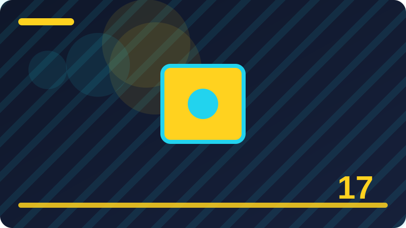

Chapter 17: Pointers in Plain Words

Section 1: What a Pointer Means
In this section we explore what a pointer means step by step, using simple language and a concrete example you can follow. The idea may sound technical at first, but underneath it is a practical tool for organising a program so it stays readable and reliable. We begin by describing the problem this idea solves, then show how Go provides a clean way to solve it. As you read, try to picture where this idea would help in a program you have already written. That habit of connecting new ideas to your own work makes learning stick far better than reading passively and moving on quickly.
The way what a pointer means works becomes clearer when you compare it with the alternative of not using it at all. Without this idea, a program often repeats the same logic in several places, or it hides important decisions inside long functions that are hard to test. With this idea, you can separate concerns, name each part honestly, and change one part without breaking everything else. Go encourages this kind of separation, not through complicated rules, but through small features that combine well. Learning to notice that separation in other people's code is a useful skill, and it grows with practice.
The code example below shows what a pointer means in a small, complete program you can run and change. Read it slowly from top to bottom, and notice how each line contributes to the result. First, look at the names chosen, because good names carry much of the meaning in Go. Next, follow the flow of data through the program, asking at each step what value is held and where it goes next. Then run the program yourself, and try changing one small detail, such as a number or a string, to see how the output responds. That cycle of reading, running, and changing is the fastest way to turn a new idea into a skill you can rely on.
There are a few pitfalls worth knowing when you work with what a pointer means, and recognising them early will save you time. One pitfall is adding too much structure too soon, before you know what the program really needs. Another is choosing names that sound impressive but hide the actual purpose of the code. A third is forgetting to test the unusual cases, such as empty input, zero values, or unexpected order, where many programs first fail. None of these mistakes means you are a poor programmer, because every experienced Go developer has made them. The difference is that experienced developers check for them deliberately, rather than hoping they will not appear.
As you finish this section, think about where what a pointer means belongs in your own projects, and where it would only add noise. A good rule is to start with the simplest version that solves the problem, then introduce this idea only when it clearly makes the code clearer, safer, or easier to test. Try using it in a small practice program this week, and ask a fellow learner to read your code and explain it back to you.
package main
import "fmt"
func main() {
value := 1
ptr := &value
*ptr = *ptr + 1
fmt.Println("value:", value, "pointer:", ptr)
}Check: In your own words, what is the key idea of what a pointer means, and when would you use it in a Go program?
Section 2: Memory Addresses Simply Explained
Here we turn to memory addresses simply explained, a topic that appears often in real Go programs and rewards careful study. Many beginners meet this idea in passing and feel unsure about it, so this section slows down and builds it up from the basics. We will define the idea simply, show what it looks like in code, and discuss where it fits in a larger program. Keep a notebook or a blank file open while you read, because writing a short summary in your own words after each paragraph will help you check whether the idea is truly clear.
At its heart, memory addresses simply explained is about making a program easier to reason about, one piece at a time. Go programs are often built from small parts that work together, and each part should be understandable on its own. This idea helps you draw those boundaries clearly, so you can test one part, reuse it elsewhere, and replace it later if a better approach appears. It is not a trick for experts only, and you should not feel that you must master every detail before using it. Start with the simple form shown here, use it in a tiny program, and let deeper understanding grow from that experience.
The code example below shows memory addresses simply explained in a small, complete program you can run and change. Read it slowly from top to bottom, and notice how each line contributes to the result. First, look at the names chosen, because good names carry much of the meaning in Go. Next, follow the flow of data through the program, asking at each step what value is held and where it goes next. Then run the program yourself, and try changing one small detail, such as a number or a string, to see how the output responds. That cycle of reading, running, and changing is the fastest way to turn a new idea into a skill you can rely on.
When memory addresses simply explained goes wrong, the symptoms are often subtle, so it helps to know what to look for. You might see output that is almost right but not quite, or a program that works for one input and fails for another. In those moments, resist the urge to change many things at once, because that makes it harder to learn which change actually fixed the problem. Change one thing, rerun the program, and observe the result carefully. Keep notes about what you tried, especially if you are working on a larger project, because those notes become a useful record of your reasoning and a guide for future debugging.
As you finish this section, think about where memory addresses simply explained belongs in your own projects, and where it would only add noise. A good rule is to start with the simplest version that solves the problem, then introduce this idea only when it clearly makes the code clearer, safer, or easier to test. Try using it in a small practice program this week, and ask a fellow learner to read your code and explain it back to you.
package main
import "fmt"
func main() {
value := 2
ptr := &value
*ptr = *ptr + 1
fmt.Println("value:", value, "pointer:", ptr)
}Check: In your own words, what is the key idea of memory addresses simply explained, and when would you use it in a Go program?
Section 3: The Ampersand Operator
This section looks closely at the ampersand operator, and it explains the idea in plain words before any code appears. You do not need to remember a formal definition to follow along, because the goal is practical understanding first. We will start with what the idea means in everyday terms, then connect it to how Go expresses it in a program. By the end of this section you should be able to recognise the idea when you see it, explain it to another learner, and use it in a small example of your own. That steady progression from meaning to use is deliberate, because Go rewards learners who understand why a feature exists, not only how to type it correctly.
To understand how the ampersand operator works in Go, it helps to think about the job it does inside a program. Go was designed to keep programs simple, explicit, and easy to read, and this idea supports that goal by giving you a clear structure to follow. When you use it well, your code states its intention directly, so a reader does not have to guess what you meant. When you use it poorly, the code can become tangled, even if it still runs. That difference between code that merely works and code that communicates clearly is central to good Go practice, and it is worth keeping in mind throughout this section.
The code example below shows the ampersand operator in a small, complete program you can run and change. Read it slowly from top to bottom, and notice how each line contributes to the result. First, look at the names chosen, because good names carry much of the meaning in Go. Next, follow the flow of data through the program, asking at each step what value is held and where it goes next. Then run the program yourself, and try changing one small detail, such as a number or a string, to see how the output responds. That cycle of reading, running, and changing is the fastest way to turn a new idea into a skill you can rely on.
Beginners often stumble on the ampersand operator not because the idea is difficult, but because they try to use it before the simple case is clear. A common mistake is to copy a pattern from a larger program without understanding why it was chosen there, which can add complexity where none is needed. Another mistake is to ignore the small details, such as a missing check, a confusing name, or an assumption about input that may not hold. Watch for those traps in your own code, and slow down whenever a program behaves unexpectedly. Debugging is easier when you can explain, in plain words, what you expected to happen and what actually happened instead.
As you finish this section, think about where the ampersand operator belongs in your own projects, and where it would only add noise. A good rule is to start with the simplest version that solves the problem, then introduce this idea only when it clearly makes the code clearer, safer, or easier to test.
package main
import "fmt"
func main() {
value := 3
ptr := &value
*ptr = *ptr + 1
fmt.Println("value:", value, "pointer:", ptr)
}Check: In your own words, what is the key idea of the ampersand operator, and when would you use it in a Go program?
Section 4: The Star Operator
In this section we explore the star operator step by step, using simple language and a concrete example you can follow. The idea may sound technical at first, but underneath it is a practical tool for organising a program so it stays readable and reliable. We begin by describing the problem this idea solves, then show how Go provides a clean way to solve it. As you read, try to picture where this idea would help in a program you have already written. That habit of connecting new ideas to your own work makes learning stick far better than reading passively and moving on quickly.
The way the star operator works becomes clearer when you compare it with the alternative of not using it at all. Without this idea, a program often repeats the same logic in several places, or it hides important decisions inside long functions that are hard to test. With this idea, you can separate concerns, name each part honestly, and change one part without breaking everything else. Go encourages this kind of separation, not through complicated rules, but through small features that combine well. Learning to notice that separation in other people's code is a useful skill, and it grows with practice.
The code example below shows the star operator in a small, complete program you can run and change. Read it slowly from top to bottom, and notice how each line contributes to the result. First, look at the names chosen, because good names carry much of the meaning in Go. Next, follow the flow of data through the program, asking at each step what value is held and where it goes next. Then run the program yourself, and try changing one small detail, such as a number or a string, to see how the output responds. That cycle of reading, running, and changing is the fastest way to turn a new idea into a skill you can rely on.
There are a few pitfalls worth knowing when you work with the star operator, and recognising them early will save you time. One pitfall is adding too much structure too soon, before you know what the program really needs. Another is choosing names that sound impressive but hide the actual purpose of the code. A third is forgetting to test the unusual cases, such as empty input, zero values, or unexpected order, where many programs first fail. None of these mistakes means you are a poor programmer, because every experienced Go developer has made them. The difference is that experienced developers check for them deliberately, rather than hoping they will not appear.
As you finish this section, think about where the star operator belongs in your own projects, and where it would only add noise. A good rule is to start with the simplest version that solves the problem, then introduce this idea only when it clearly makes the code clearer, safer, or easier to test. Try using it in a small practice program this week, and ask a fellow learner to read your code and explain it back to you.
package main
import "fmt"
func main() {
value := 4
ptr := &value
*ptr = *ptr + 1
fmt.Println("value:", value, "pointer:", ptr)
}Check: In your own words, what is the key idea of the star operator, and when would you use it in a Go program?
Section 5: Declaring a Pointer
Here we turn to declaring a pointer, a topic that appears often in real Go programs and rewards careful study. Many beginners meet this idea in passing and feel unsure about it, so this section slows down and builds it up from the basics. We will define the idea simply, show what it looks like in code, and discuss where it fits in a larger program. Keep a notebook or a blank file open while you read, because writing a short summary in your own words after each paragraph will help you check whether the idea is truly clear.
At its heart, declaring a pointer is about making a program easier to reason about, one piece at a time. Go programs are often built from small parts that work together, and each part should be understandable on its own. This idea helps you draw those boundaries clearly, so you can test one part, reuse it elsewhere, and replace it later if a better approach appears. It is not a trick for experts only, and you should not feel that you must master every detail before using it. Start with the simple form shown here, use it in a tiny program, and let deeper understanding grow from that experience.
The code example below shows declaring a pointer in a small, complete program you can run and change. Read it slowly from top to bottom, and notice how each line contributes to the result. First, look at the names chosen, because good names carry much of the meaning in Go. Next, follow the flow of data through the program, asking at each step what value is held and where it goes next. Then run the program yourself, and try changing one small detail, such as a number or a string, to see how the output responds. That cycle of reading, running, and changing is the fastest way to turn a new idea into a skill you can rely on.
When declaring a pointer goes wrong, the symptoms are often subtle, so it helps to know what to look for. You might see output that is almost right but not quite, or a program that works for one input and fails for another. In those moments, resist the urge to change many things at once, because that makes it harder to learn which change actually fixed the problem. Change one thing, rerun the program, and observe the result carefully. Keep notes about what you tried, especially if you are working on a larger project, because those notes become a useful record of your reasoning and a guide for future debugging.
As you finish this section, think about where declaring a pointer belongs in your own projects, and where it would only add noise. A good rule is to start with the simplest version that solves the problem, then introduce this idea only when it clearly makes the code clearer, safer, or easier to test. Try using it in a small practice program this week, and ask a fellow learner to read your code and explain it back to you.
package main
import "fmt"
func main() {
value := 5
ptr := &value
*ptr = *ptr + 1
fmt.Println("value:", value, "pointer:", ptr)
}Check: In your own words, what is the key idea of declaring a pointer, and when would you use it in a Go program?
Section 6: Zero Value of a Pointer
This section looks closely at zero value of a pointer, and it explains the idea in plain words before any code appears. You do not need to remember a formal definition to follow along, because the goal is practical understanding first. We will start with what the idea means in everyday terms, then connect it to how Go expresses it in a program. By the end of this section you should be able to recognise the idea when you see it, explain it to another learner, and use it in a small example of your own. That steady progression from meaning to use is deliberate, because Go rewards learners who understand why a feature exists, not only how to type it correctly.
To understand how zero value of a pointer works in Go, it helps to think about the job it does inside a program. Go was designed to keep programs simple, explicit, and easy to read, and this idea supports that goal by giving you a clear structure to follow. When you use it well, your code states its intention directly, so a reader does not have to guess what you meant. When you use it poorly, the code can become tangled, even if it still runs. That difference between code that merely works and code that communicates clearly is central to good Go practice, and it is worth keeping in mind throughout this section.
The code example below shows zero value of a pointer in a small, complete program you can run and change. Read it slowly from top to bottom, and notice how each line contributes to the result. First, look at the names chosen, because good names carry much of the meaning in Go. Next, follow the flow of data through the program, asking at each step what value is held and where it goes next. Then run the program yourself, and try changing one small detail, such as a number or a string, to see how the output responds. That cycle of reading, running, and changing is the fastest way to turn a new idea into a skill you can rely on.
Beginners often stumble on zero value of a pointer not because the idea is difficult, but because they try to use it before the simple case is clear. A common mistake is to copy a pattern from a larger program without understanding why it was chosen there, which can add complexity where none is needed. Another mistake is to ignore the small details, such as a missing check, a confusing name, or an assumption about input that may not hold. Watch for those traps in your own code, and slow down whenever a program behaves unexpectedly. Debugging is easier when you can explain, in plain words, what you expected to happen and what actually happened instead.
As you finish this section, think about where zero value of a pointer belongs in your own projects, and where it would only add noise. A good rule is to start with the simplest version that solves the problem, then introduce this idea only when it clearly makes the code clearer, safer, or easier to test.
package main
import "fmt"
func main() {
value := 6
ptr := &value
*ptr = *ptr + 1
fmt.Println("value:", value, "pointer:", ptr)
}Check: In your own words, what is the key idea of zero value of a pointer, and when would you use it in a Go program?
Section 7: Nil Pointers Safely
In this section we explore nil pointers safely step by step, using simple language and a concrete example you can follow. The idea may sound technical at first, but underneath it is a practical tool for organising a program so it stays readable and reliable. We begin by describing the problem this idea solves, then show how Go provides a clean way to solve it. As you read, try to picture where this idea would help in a program you have already written. That habit of connecting new ideas to your own work makes learning stick far better than reading passively and moving on quickly.
The way nil pointers safely works becomes clearer when you compare it with the alternative of not using it at all. Without this idea, a program often repeats the same logic in several places, or it hides important decisions inside long functions that are hard to test. With this idea, you can separate concerns, name each part honestly, and change one part without breaking everything else. Go encourages this kind of separation, not through complicated rules, but through small features that combine well. Learning to notice that separation in other people's code is a useful skill, and it grows with practice.
The code example below shows nil pointers safely in a small, complete program you can run and change. Read it slowly from top to bottom, and notice how each line contributes to the result. First, look at the names chosen, because good names carry much of the meaning in Go. Next, follow the flow of data through the program, asking at each step what value is held and where it goes next. Then run the program yourself, and try changing one small detail, such as a number or a string, to see how the output responds. That cycle of reading, running, and changing is the fastest way to turn a new idea into a skill you can rely on.
There are a few pitfalls worth knowing when you work with nil pointers safely, and recognising them early will save you time. One pitfall is adding too much structure too soon, before you know what the program really needs. Another is choosing names that sound impressive but hide the actual purpose of the code. A third is forgetting to test the unusual cases, such as empty input, zero values, or unexpected order, where many programs first fail. None of these mistakes means you are a poor programmer, because every experienced Go developer has made them. The difference is that experienced developers check for them deliberately, rather than hoping they will not appear.
As you finish this section, think about where nil pointers safely belongs in your own projects, and where it would only add noise. A good rule is to start with the simplest version that solves the problem, then introduce this idea only when it clearly makes the code clearer, safer, or easier to test. Try using it in a small practice program this week, and ask a fellow learner to read your code and explain it back to you.
package main
import "fmt"
func main() {
value := 7
ptr := &value
*ptr = *ptr + 1
fmt.Println("value:", value, "pointer:", ptr)
}Check: In your own words, what is the key idea of nil pointers safely, and when would you use it in a Go program?
Section 8: Dereferencing Step by Step
Here we turn to dereferencing step by step, a topic that appears often in real Go programs and rewards careful study. Many beginners meet this idea in passing and feel unsure about it, so this section slows down and builds it up from the basics. We will define the idea simply, show what it looks like in code, and discuss where it fits in a larger program. Keep a notebook or a blank file open while you read, because writing a short summary in your own words after each paragraph will help you check whether the idea is truly clear.
At its heart, dereferencing step by step is about making a program easier to reason about, one piece at a time. Go programs are often built from small parts that work together, and each part should be understandable on its own. This idea helps you draw those boundaries clearly, so you can test one part, reuse it elsewhere, and replace it later if a better approach appears. It is not a trick for experts only, and you should not feel that you must master every detail before using it. Start with the simple form shown here, use it in a tiny program, and let deeper understanding grow from that experience.
The code example below shows dereferencing step by step in a small, complete program you can run and change. Read it slowly from top to bottom, and notice how each line contributes to the result. First, look at the names chosen, because good names carry much of the meaning in Go. Next, follow the flow of data through the program, asking at each step what value is held and where it goes next. Then run the program yourself, and try changing one small detail, such as a number or a string, to see how the output responds. That cycle of reading, running, and changing is the fastest way to turn a new idea into a skill you can rely on.
When dereferencing step by step goes wrong, the symptoms are often subtle, so it helps to know what to look for. You might see output that is almost right but not quite, or a program that works for one input and fails for another. In those moments, resist the urge to change many things at once, because that makes it harder to learn which change actually fixed the problem. Change one thing, rerun the program, and observe the result carefully. Keep notes about what you tried, especially if you are working on a larger project, because those notes become a useful record of your reasoning and a guide for future debugging.
As you finish this section, think about where dereferencing step by step belongs in your own projects, and where it would only add noise. A good rule is to start with the simplest version that solves the problem, then introduce this idea only when it clearly makes the code clearer, safer, or easier to test. Try using it in a small practice program this week, and ask a fellow learner to read your code and explain it back to you.
package main
import "fmt"
func main() {
value := 8
ptr := &value
*ptr = *ptr + 1
fmt.Println("value:", value, "pointer:", ptr)
}Check: In your own words, what is the key idea of dereferencing step by step, and when would you use it in a Go program?
Section 9: Changing a Value Through a Pointer
This section looks closely at changing a value through a pointer, and it explains the idea in plain words before any code appears. You do not need to remember a formal definition to follow along, because the goal is practical understanding first. We will start with what the idea means in everyday terms, then connect it to how Go expresses it in a program. By the end of this section you should be able to recognise the idea when you see it, explain it to another learner, and use it in a small example of your own. That steady progression from meaning to use is deliberate, because Go rewards learners who understand why a feature exists, not only how to type it correctly.
To understand how changing a value through a pointer works in Go, it helps to think about the job it does inside a program. Go was designed to keep programs simple, explicit, and easy to read, and this idea supports that goal by giving you a clear structure to follow. When you use it well, your code states its intention directly, so a reader does not have to guess what you meant. When you use it poorly, the code can become tangled, even if it still runs. That difference between code that merely works and code that communicates clearly is central to good Go practice, and it is worth keeping in mind throughout this section.
The code example below shows changing a value through a pointer in a small, complete program you can run and change. Read it slowly from top to bottom, and notice how each line contributes to the result. First, look at the names chosen, because good names carry much of the meaning in Go. Next, follow the flow of data through the program, asking at each step what value is held and where it goes next. Then run the program yourself, and try changing one small detail, such as a number or a string, to see how the output responds. That cycle of reading, running, and changing is the fastest way to turn a new idea into a skill you can rely on.
Beginners often stumble on changing a value through a pointer not because the idea is difficult, but because they try to use it before the simple case is clear. A common mistake is to copy a pattern from a larger program without understanding why it was chosen there, which can add complexity where none is needed. Another mistake is to ignore the small details, such as a missing check, a confusing name, or an assumption about input that may not hold. Watch for those traps in your own code, and slow down whenever a program behaves unexpectedly. Debugging is easier when you can explain, in plain words, what you expected to happen and what actually happened instead.
As you finish this section, think about where changing a value through a pointer belongs in your own projects, and where it would only add noise. A good rule is to start with the simplest version that solves the problem, then introduce this idea only when it clearly makes the code clearer, safer, or easier to test.
package main
import "fmt"
func main() {
value := 9
ptr := &value
*ptr = *ptr + 1
fmt.Println("value:", value, "pointer:", ptr)
}Check: In your own words, what is the key idea of changing a value through a pointer, and when would you use it in a Go program?
Section 10: Pointers and Function Arguments
In this section we explore pointers and function arguments step by step, using simple language and a concrete example you can follow. The idea may sound technical at first, but underneath it is a practical tool for organising a program so it stays readable and reliable. We begin by describing the problem this idea solves, then show how Go provides a clean way to solve it. As you read, try to picture where this idea would help in a program you have already written. That habit of connecting new ideas to your own work makes learning stick far better than reading passively and moving on quickly.
The way pointers and function arguments works becomes clearer when you compare it with the alternative of not using it at all. Without this idea, a program often repeats the same logic in several places, or it hides important decisions inside long functions that are hard to test. With this idea, you can separate concerns, name each part honestly, and change one part without breaking everything else. Go encourages this kind of separation, not through complicated rules, but through small features that combine well. Learning to notice that separation in other people's code is a useful skill, and it grows with practice.
The code example below shows pointers and function arguments in a small, complete program you can run and change. Read it slowly from top to bottom, and notice how each line contributes to the result. First, look at the names chosen, because good names carry much of the meaning in Go. Next, follow the flow of data through the program, asking at each step what value is held and where it goes next. Then run the program yourself, and try changing one small detail, such as a number or a string, to see how the output responds. That cycle of reading, running, and changing is the fastest way to turn a new idea into a skill you can rely on.
There are a few pitfalls worth knowing when you work with pointers and function arguments, and recognising them early will save you time. One pitfall is adding too much structure too soon, before you know what the program really needs. Another is choosing names that sound impressive but hide the actual purpose of the code. A third is forgetting to test the unusual cases, such as empty input, zero values, or unexpected order, where many programs first fail. None of these mistakes means you are a poor programmer, because every experienced Go developer has made them. The difference is that experienced developers check for them deliberately, rather than hoping they will not appear.
As you finish this section, think about where pointers and function arguments belongs in your own projects, and where it would only add noise. A good rule is to start with the simplest version that solves the problem, then introduce this idea only when it clearly makes the code clearer, safer, or easier to test. Try using it in a small practice program this week, and ask a fellow learner to read your code and explain it back to you.
package main
import "fmt"
func main() {
value := 10
ptr := &value
*ptr = *ptr + 1
fmt.Println("value:", value, "pointer:", ptr)
}Check: In your own words, what is the key idea of pointers and function arguments, and when would you use it in a Go program?
Section 11: Why Functions Copy Values
Here we turn to why functions copy values, a topic that appears often in real Go programs and rewards careful study. Many beginners meet this idea in passing and feel unsure about it, so this section slows down and builds it up from the basics. We will define the idea simply, show what it looks like in code, and discuss where it fits in a larger program. Keep a notebook or a blank file open while you read, because writing a short summary in your own words after each paragraph will help you check whether the idea is truly clear.
At its heart, why functions copy values is about making a program easier to reason about, one piece at a time. Go programs are often built from small parts that work together, and each part should be understandable on its own. This idea helps you draw those boundaries clearly, so you can test one part, reuse it elsewhere, and replace it later if a better approach appears. It is not a trick for experts only, and you should not feel that you must master every detail before using it. Start with the simple form shown here, use it in a tiny program, and let deeper understanding grow from that experience.
The code example below shows why functions copy values in a small, complete program you can run and change. Read it slowly from top to bottom, and notice how each line contributes to the result. First, look at the names chosen, because good names carry much of the meaning in Go. Next, follow the flow of data through the program, asking at each step what value is held and where it goes next. Then run the program yourself, and try changing one small detail, such as a number or a string, to see how the output responds. That cycle of reading, running, and changing is the fastest way to turn a new idea into a skill you can rely on.
When why functions copy values goes wrong, the symptoms are often subtle, so it helps to know what to look for. You might see output that is almost right but not quite, or a program that works for one input and fails for another. In those moments, resist the urge to change many things at once, because that makes it harder to learn which change actually fixed the problem. Change one thing, rerun the program, and observe the result carefully. Keep notes about what you tried, especially if you are working on a larger project, because those notes become a useful record of your reasoning and a guide for future debugging.
As you finish this section, think about where why functions copy values belongs in your own projects, and where it would only add noise. A good rule is to start with the simplest version that solves the problem, then introduce this idea only when it clearly makes the code clearer, safer, or easier to test. Try using it in a small practice program this week, and ask a fellow learner to read your code and explain it back to you.
package main
import "fmt"
func main() {
value := 11
ptr := &value
*ptr = *ptr + 1
fmt.Println("value:", value, "pointer:", ptr)
}Check: In your own words, what is the key idea of why functions copy values, and when would you use it in a Go program?
Section 12: Passing a Pointer to Change Data
This section looks closely at passing a pointer to change data, and it explains the idea in plain words before any code appears. You do not need to remember a formal definition to follow along, because the goal is practical understanding first. We will start with what the idea means in everyday terms, then connect it to how Go expresses it in a program. By the end of this section you should be able to recognise the idea when you see it, explain it to another learner, and use it in a small example of your own. That steady progression from meaning to use is deliberate, because Go rewards learners who understand why a feature exists, not only how to type it correctly.
To understand how passing a pointer to change data works in Go, it helps to think about the job it does inside a program. Go was designed to keep programs simple, explicit, and easy to read, and this idea supports that goal by giving you a clear structure to follow. When you use it well, your code states its intention directly, so a reader does not have to guess what you meant. When you use it poorly, the code can become tangled, even if it still runs. That difference between code that merely works and code that communicates clearly is central to good Go practice, and it is worth keeping in mind throughout this section.
The code example below shows passing a pointer to change data in a small, complete program you can run and change. Read it slowly from top to bottom, and notice how each line contributes to the result. First, look at the names chosen, because good names carry much of the meaning in Go. Next, follow the flow of data through the program, asking at each step what value is held and where it goes next. Then run the program yourself, and try changing one small detail, such as a number or a string, to see how the output responds. That cycle of reading, running, and changing is the fastest way to turn a new idea into a skill you can rely on.
Beginners often stumble on passing a pointer to change data not because the idea is difficult, but because they try to use it before the simple case is clear. A common mistake is to copy a pattern from a larger program without understanding why it was chosen there, which can add complexity where none is needed. Another mistake is to ignore the small details, such as a missing check, a confusing name, or an assumption about input that may not hold. Watch for those traps in your own code, and slow down whenever a program behaves unexpectedly. Debugging is easier when you can explain, in plain words, what you expected to happen and what actually happened instead.
As you finish this section, think about where passing a pointer to change data belongs in your own projects, and where it would only add noise. A good rule is to start with the simplest version that solves the problem, then introduce this idea only when it clearly makes the code clearer, safer, or easier to test.
package main
import "fmt"
func main() {
value := 12
ptr := &value
*ptr = *ptr + 1
fmt.Println("value:", value, "pointer:", ptr)
}Check: In your own words, what is the key idea of passing a pointer to change data, and when would you use it in a Go program?
Section 13: Returning a Pointer
In this section we explore returning a pointer step by step, using simple language and a concrete example you can follow. The idea may sound technical at first, but underneath it is a practical tool for organising a program so it stays readable and reliable. We begin by describing the problem this idea solves, then show how Go provides a clean way to solve it. As you read, try to picture where this idea would help in a program you have already written. That habit of connecting new ideas to your own work makes learning stick far better than reading passively and moving on quickly.
The way returning a pointer works becomes clearer when you compare it with the alternative of not using it at all. Without this idea, a program often repeats the same logic in several places, or it hides important decisions inside long functions that are hard to test. With this idea, you can separate concerns, name each part honestly, and change one part without breaking everything else. Go encourages this kind of separation, not through complicated rules, but through small features that combine well. Learning to notice that separation in other people's code is a useful skill, and it grows with practice.
The code example below shows returning a pointer in a small, complete program you can run and change. Read it slowly from top to bottom, and notice how each line contributes to the result. First, look at the names chosen, because good names carry much of the meaning in Go. Next, follow the flow of data through the program, asking at each step what value is held and where it goes next. Then run the program yourself, and try changing one small detail, such as a number or a string, to see how the output responds. That cycle of reading, running, and changing is the fastest way to turn a new idea into a skill you can rely on.
There are a few pitfalls worth knowing when you work with returning a pointer, and recognising them early will save you time. One pitfall is adding too much structure too soon, before you know what the program really needs. Another is choosing names that sound impressive but hide the actual purpose of the code. A third is forgetting to test the unusual cases, such as empty input, zero values, or unexpected order, where many programs first fail. None of these mistakes means you are a poor programmer, because every experienced Go developer has made them. The difference is that experienced developers check for them deliberately, rather than hoping they will not appear.
As you finish this section, think about where returning a pointer belongs in your own projects, and where it would only add noise. A good rule is to start with the simplest version that solves the problem, then introduce this idea only when it clearly makes the code clearer, safer, or easier to test. Try using it in a small practice program this week, and ask a fellow learner to read your code and explain it back to you.
package main
import "fmt"
func main() {
value := 13
ptr := &value
*ptr = *ptr + 1
fmt.Println("value:", value, "pointer:", ptr)
}Check: In your own words, what is the key idea of returning a pointer, and when would you use it in a Go program?
Section 14: Pointers and Structs
Here we turn to pointers and structs, a topic that appears often in real Go programs and rewards careful study. Many beginners meet this idea in passing and feel unsure about it, so this section slows down and builds it up from the basics. We will define the idea simply, show what it looks like in code, and discuss where it fits in a larger program. Keep a notebook or a blank file open while you read, because writing a short summary in your own words after each paragraph will help you check whether the idea is truly clear.
At its heart, pointers and structs is about making a program easier to reason about, one piece at a time. Go programs are often built from small parts that work together, and each part should be understandable on its own. This idea helps you draw those boundaries clearly, so you can test one part, reuse it elsewhere, and replace it later if a better approach appears. It is not a trick for experts only, and you should not feel that you must master every detail before using it. Start with the simple form shown here, use it in a tiny program, and let deeper understanding grow from that experience.
The code example below shows pointers and structs in a small, complete program you can run and change. Read it slowly from top to bottom, and notice how each line contributes to the result. First, look at the names chosen, because good names carry much of the meaning in Go. Next, follow the flow of data through the program, asking at each step what value is held and where it goes next. Then run the program yourself, and try changing one small detail, such as a number or a string, to see how the output responds. That cycle of reading, running, and changing is the fastest way to turn a new idea into a skill you can rely on.
When pointers and structs goes wrong, the symptoms are often subtle, so it helps to know what to look for. You might see output that is almost right but not quite, or a program that works for one input and fails for another. In those moments, resist the urge to change many things at once, because that makes it harder to learn which change actually fixed the problem. Change one thing, rerun the program, and observe the result carefully. Keep notes about what you tried, especially if you are working on a larger project, because those notes become a useful record of your reasoning and a guide for future debugging.
As you finish this section, think about where pointers and structs belongs in your own projects, and where it would only add noise. A good rule is to start with the simplest version that solves the problem, then introduce this idea only when it clearly makes the code clearer, safer, or easier to test. Try using it in a small practice program this week, and ask a fellow learner to read your code and explain it back to you.
package main
import "fmt"
func main() {
value := 14
ptr := &value
*ptr = *ptr + 1
fmt.Println("value:", value, "pointer:", ptr)
}Check: In your own words, what is the key idea of pointers and structs, and when would you use it in a Go program?
Section 15: Accessing Struct Fields Through Pointers
This section looks closely at accessing struct fields through pointers, and it explains the idea in plain words before any code appears. You do not need to remember a formal definition to follow along, because the goal is practical understanding first. We will start with what the idea means in everyday terms, then connect it to how Go expresses it in a program. By the end of this section you should be able to recognise the idea when you see it, explain it to another learner, and use it in a small example of your own. That steady progression from meaning to use is deliberate, because Go rewards learners who understand why a feature exists, not only how to type it correctly.
To understand how accessing struct fields through pointers works in Go, it helps to think about the job it does inside a program. Go was designed to keep programs simple, explicit, and easy to read, and this idea supports that goal by giving you a clear structure to follow. When you use it well, your code states its intention directly, so a reader does not have to guess what you meant. When you use it poorly, the code can become tangled, even if it still runs. That difference between code that merely works and code that communicates clearly is central to good Go practice, and it is worth keeping in mind throughout this section.
The code example below shows accessing struct fields through pointers in a small, complete program you can run and change. Read it slowly from top to bottom, and notice how each line contributes to the result. First, look at the names chosen, because good names carry much of the meaning in Go. Next, follow the flow of data through the program, asking at each step what value is held and where it goes next. Then run the program yourself, and try changing one small detail, such as a number or a string, to see how the output responds. That cycle of reading, running, and changing is the fastest way to turn a new idea into a skill you can rely on.
Beginners often stumble on accessing struct fields through pointers not because the idea is difficult, but because they try to use it before the simple case is clear. A common mistake is to copy a pattern from a larger program without understanding why it was chosen there, which can add complexity where none is needed. Another mistake is to ignore the small details, such as a missing check, a confusing name, or an assumption about input that may not hold. Watch for those traps in your own code, and slow down whenever a program behaves unexpectedly. Debugging is easier when you can explain, in plain words, what you expected to happen and what actually happened instead.
As you finish this section, think about where accessing struct fields through pointers belongs in your own projects, and where it would only add noise. A good rule is to start with the simplest version that solves the problem, then introduce this idea only when it clearly makes the code clearer, safer, or easier to test.
package main
import "fmt"
func main() {
value := 15
ptr := &value
*ptr = *ptr + 1
fmt.Println("value:", value, "pointer:", ptr)
}Check: In your own words, what is the key idea of accessing struct fields through pointers, and when would you use it in a Go program?
Section 16: Pointer Receivers Explained
In this section we explore pointer receivers explained step by step, using simple language and a concrete example you can follow. The idea may sound technical at first, but underneath it is a practical tool for organising a program so it stays readable and reliable. We begin by describing the problem this idea solves, then show how Go provides a clean way to solve it. As you read, try to picture where this idea would help in a program you have already written. That habit of connecting new ideas to your own work makes learning stick far better than reading passively and moving on quickly.
The way pointer receivers explained works becomes clearer when you compare it with the alternative of not using it at all. Without this idea, a program often repeats the same logic in several places, or it hides important decisions inside long functions that are hard to test. With this idea, you can separate concerns, name each part honestly, and change one part without breaking everything else. Go encourages this kind of separation, not through complicated rules, but through small features that combine well. Learning to notice that separation in other people's code is a useful skill, and it grows with practice.
The code example below shows pointer receivers explained in a small, complete program you can run and change. Read it slowly from top to bottom, and notice how each line contributes to the result. First, look at the names chosen, because good names carry much of the meaning in Go. Next, follow the flow of data through the program, asking at each step what value is held and where it goes next. Then run the program yourself, and try changing one small detail, such as a number or a string, to see how the output responds. That cycle of reading, running, and changing is the fastest way to turn a new idea into a skill you can rely on.
There are a few pitfalls worth knowing when you work with pointer receivers explained, and recognising them early will save you time. One pitfall is adding too much structure too soon, before you know what the program really needs. Another is choosing names that sound impressive but hide the actual purpose of the code. A third is forgetting to test the unusual cases, such as empty input, zero values, or unexpected order, where many programs first fail. None of these mistakes means you are a poor programmer, because every experienced Go developer has made them. The difference is that experienced developers check for them deliberately, rather than hoping they will not appear.
As you finish this section, think about where pointer receivers explained belongs in your own projects, and where it would only add noise. A good rule is to start with the simplest version that solves the problem, then introduce this idea only when it clearly makes the code clearer, safer, or easier to test. Try using it in a small practice program this week, and ask a fellow learner to read your code and explain it back to you.
package main
import "fmt"
func main() {
value := 16
ptr := &value
*ptr = *ptr + 1
fmt.Println("value:", value, "pointer:", ptr)
}Check: In your own words, what is the key idea of pointer receivers explained, and when would you use it in a Go program?
Section 17: Value Receivers Compared
Here we turn to value receivers compared, a topic that appears often in real Go programs and rewards careful study. Many beginners meet this idea in passing and feel unsure about it, so this section slows down and builds it up from the basics. We will define the idea simply, show what it looks like in code, and discuss where it fits in a larger program. Keep a notebook or a blank file open while you read, because writing a short summary in your own words after each paragraph will help you check whether the idea is truly clear.
At its heart, value receivers compared is about making a program easier to reason about, one piece at a time. Go programs are often built from small parts that work together, and each part should be understandable on its own. This idea helps you draw those boundaries clearly, so you can test one part, reuse it elsewhere, and replace it later if a better approach appears. It is not a trick for experts only, and you should not feel that you must master every detail before using it. Start with the simple form shown here, use it in a tiny program, and let deeper understanding grow from that experience.
The code example below shows value receivers compared in a small, complete program you can run and change. Read it slowly from top to bottom, and notice how each line contributes to the result. First, look at the names chosen, because good names carry much of the meaning in Go. Next, follow the flow of data through the program, asking at each step what value is held and where it goes next. Then run the program yourself, and try changing one small detail, such as a number or a string, to see how the output responds. That cycle of reading, running, and changing is the fastest way to turn a new idea into a skill you can rely on.
When value receivers compared goes wrong, the symptoms are often subtle, so it helps to know what to look for. You might see output that is almost right but not quite, or a program that works for one input and fails for another. In those moments, resist the urge to change many things at once, because that makes it harder to learn which change actually fixed the problem. Change one thing, rerun the program, and observe the result carefully. Keep notes about what you tried, especially if you are working on a larger project, because those notes become a useful record of your reasoning and a guide for future debugging.
As you finish this section, think about where value receivers compared belongs in your own projects, and where it would only add noise. A good rule is to start with the simplest version that solves the problem, then introduce this idea only when it clearly makes the code clearer, safer, or easier to test. Try using it in a small practice program this week, and ask a fellow learner to read your code and explain it back to you.
package main
import "fmt"
func main() {
value := 17
ptr := &value
*ptr = *ptr + 1
fmt.Println("value:", value, "pointer:", ptr)
}Check: In your own words, what is the key idea of value receivers compared, and when would you use it in a Go program?
Section 18: When to Use Pointer Receivers
This section looks closely at when to use pointer receivers, and it explains the idea in plain words before any code appears. You do not need to remember a formal definition to follow along, because the goal is practical understanding first. We will start with what the idea means in everyday terms, then connect it to how Go expresses it in a program. By the end of this section you should be able to recognise the idea when you see it, explain it to another learner, and use it in a small example of your own. That steady progression from meaning to use is deliberate, because Go rewards learners who understand why a feature exists, not only how to type it correctly.
To understand how when to use pointer receivers works in Go, it helps to think about the job it does inside a program. Go was designed to keep programs simple, explicit, and easy to read, and this idea supports that goal by giving you a clear structure to follow. When you use it well, your code states its intention directly, so a reader does not have to guess what you meant. When you use it poorly, the code can become tangled, even if it still runs. That difference between code that merely works and code that communicates clearly is central to good Go practice, and it is worth keeping in mind throughout this section.
The code example below shows when to use pointer receivers in a small, complete program you can run and change. Read it slowly from top to bottom, and notice how each line contributes to the result. First, look at the names chosen, because good names carry much of the meaning in Go. Next, follow the flow of data through the program, asking at each step what value is held and where it goes next. Then run the program yourself, and try changing one small detail, such as a number or a string, to see how the output responds. That cycle of reading, running, and changing is the fastest way to turn a new idea into a skill you can rely on.
Beginners often stumble on when to use pointer receivers not because the idea is difficult, but because they try to use it before the simple case is clear. A common mistake is to copy a pattern from a larger program without understanding why it was chosen there, which can add complexity where none is needed. Another mistake is to ignore the small details, such as a missing check, a confusing name, or an assumption about input that may not hold. Watch for those traps in your own code, and slow down whenever a program behaves unexpectedly. Debugging is easier when you can explain, in plain words, what you expected to happen and what actually happened instead.
As you finish this section, think about where when to use pointer receivers belongs in your own projects, and where it would only add noise. A good rule is to start with the simplest version that solves the problem, then introduce this idea only when it clearly makes the code clearer, safer, or easier to test.
package main
import "fmt"
func main() {
value := 18
ptr := &value
*ptr = *ptr + 1
fmt.Println("value:", value, "pointer:", ptr)
}Check: In your own words, what is the key idea of when to use pointer receivers, and when would you use it in a Go program?
Section 19: Pointer Methods in Practice
In this section we explore pointer methods in practice step by step, using simple language and a concrete example you can follow. The idea may sound technical at first, but underneath it is a practical tool for organising a program so it stays readable and reliable. We begin by describing the problem this idea solves, then show how Go provides a clean way to solve it. As you read, try to picture where this idea would help in a program you have already written. That habit of connecting new ideas to your own work makes learning stick far better than reading passively and moving on quickly.
The way pointer methods in practice works becomes clearer when you compare it with the alternative of not using it at all. Without this idea, a program often repeats the same logic in several places, or it hides important decisions inside long functions that are hard to test. With this idea, you can separate concerns, name each part honestly, and change one part without breaking everything else. Go encourages this kind of separation, not through complicated rules, but through small features that combine well. Learning to notice that separation in other people's code is a useful skill, and it grows with practice.
The code example below shows pointer methods in practice in a small, complete program you can run and change. Read it slowly from top to bottom, and notice how each line contributes to the result. First, look at the names chosen, because good names carry much of the meaning in Go. Next, follow the flow of data through the program, asking at each step what value is held and where it goes next. Then run the program yourself, and try changing one small detail, such as a number or a string, to see how the output responds. That cycle of reading, running, and changing is the fastest way to turn a new idea into a skill you can rely on.
There are a few pitfalls worth knowing when you work with pointer methods in practice, and recognising them early will save you time. One pitfall is adding too much structure too soon, before you know what the program really needs. Another is choosing names that sound impressive but hide the actual purpose of the code. A third is forgetting to test the unusual cases, such as empty input, zero values, or unexpected order, where many programs first fail. None of these mistakes means you are a poor programmer, because every experienced Go developer has made them. The difference is that experienced developers check for them deliberately, rather than hoping they will not appear.
As you finish this section, think about where pointer methods in practice belongs in your own projects, and where it would only add noise. A good rule is to start with the simplest version that solves the problem, then introduce this idea only when it clearly makes the code clearer, safer, or easier to test. Try using it in a small practice program this week, and ask a fellow learner to read your code and explain it back to you.
package main
import "fmt"
func main() {
value := 19
ptr := &value
*ptr = *ptr + 1
fmt.Println("value:", value, "pointer:", ptr)
}Check: In your own words, what is the key idea of pointer methods in practice, and when would you use it in a Go program?
Section 20: Arrays and Pointers
Here we turn to arrays and pointers, a topic that appears often in real Go programs and rewards careful study. Many beginners meet this idea in passing and feel unsure about it, so this section slows down and builds it up from the basics. We will define the idea simply, show what it looks like in code, and discuss where it fits in a larger program. Keep a notebook or a blank file open while you read, because writing a short summary in your own words after each paragraph will help you check whether the idea is truly clear.
At its heart, arrays and pointers is about making a program easier to reason about, one piece at a time. Go programs are often built from small parts that work together, and each part should be understandable on its own. This idea helps you draw those boundaries clearly, so you can test one part, reuse it elsewhere, and replace it later if a better approach appears. It is not a trick for experts only, and you should not feel that you must master every detail before using it. Start with the simple form shown here, use it in a tiny program, and let deeper understanding grow from that experience.
The code example below shows arrays and pointers in a small, complete program you can run and change. Read it slowly from top to bottom, and notice how each line contributes to the result. First, look at the names chosen, because good names carry much of the meaning in Go. Next, follow the flow of data through the program, asking at each step what value is held and where it goes next. Then run the program yourself, and try changing one small detail, such as a number or a string, to see how the output responds. That cycle of reading, running, and changing is the fastest way to turn a new idea into a skill you can rely on.
When arrays and pointers goes wrong, the symptoms are often subtle, so it helps to know what to look for. You might see output that is almost right but not quite, or a program that works for one input and fails for another. In those moments, resist the urge to change many things at once, because that makes it harder to learn which change actually fixed the problem. Change one thing, rerun the program, and observe the result carefully. Keep notes about what you tried, especially if you are working on a larger project, because those notes become a useful record of your reasoning and a guide for future debugging.
As you finish this section, think about where arrays and pointers belongs in your own projects, and where it would only add noise. A good rule is to start with the simplest version that solves the problem, then introduce this idea only when it clearly makes the code clearer, safer, or easier to test. Try using it in a small practice program this week, and ask a fellow learner to read your code and explain it back to you.
package main
import "fmt"
func main() {
value := 20
ptr := &value
*ptr = *ptr + 1
fmt.Println("value:", value, "pointer:", ptr)
}Check: In your own words, what is the key idea of arrays and pointers, and when would you use it in a Go program?
Section 21: Slices Are Not Plain Pointers
This section looks closely at slices are not plain pointers, and it explains the idea in plain words before any code appears. You do not need to remember a formal definition to follow along, because the goal is practical understanding first. We will start with what the idea means in everyday terms, then connect it to how Go expresses it in a program. By the end of this section you should be able to recognise the idea when you see it, explain it to another learner, and use it in a small example of your own. That steady progression from meaning to use is deliberate, because Go rewards learners who understand why a feature exists, not only how to type it correctly.
To understand how slices are not plain pointers works in Go, it helps to think about the job it does inside a program. Go was designed to keep programs simple, explicit, and easy to read, and this idea supports that goal by giving you a clear structure to follow. When you use it well, your code states its intention directly, so a reader does not have to guess what you meant. When you use it poorly, the code can become tangled, even if it still runs. That difference between code that merely works and code that communicates clearly is central to good Go practice, and it is worth keeping in mind throughout this section.
The code example below shows slices are not plain pointers in a small, complete program you can run and change. Read it slowly from top to bottom, and notice how each line contributes to the result. First, look at the names chosen, because good names carry much of the meaning in Go. Next, follow the flow of data through the program, asking at each step what value is held and where it goes next. Then run the program yourself, and try changing one small detail, such as a number or a string, to see how the output responds. That cycle of reading, running, and changing is the fastest way to turn a new idea into a skill you can rely on.
Beginners often stumble on slices are not plain pointers not because the idea is difficult, but because they try to use it before the simple case is clear. A common mistake is to copy a pattern from a larger program without understanding why it was chosen there, which can add complexity where none is needed. Another mistake is to ignore the small details, such as a missing check, a confusing name, or an assumption about input that may not hold. Watch for those traps in your own code, and slow down whenever a program behaves unexpectedly. Debugging is easier when you can explain, in plain words, what you expected to happen and what actually happened instead.
As you finish this section, think about where slices are not plain pointers belongs in your own projects, and where it would only add noise. A good rule is to start with the simplest version that solves the problem, then introduce this idea only when it clearly makes the code clearer, safer, or easier to test.
package main
import "fmt"
func main() {
value := 21
ptr := &value
*ptr = *ptr + 1
fmt.Println("value:", value, "pointer:", ptr)
}Check: In your own words, what is the key idea of slices are not plain pointers, and when would you use it in a Go program?
Section 22: Maps and Pointers
In this section we explore maps and pointers step by step, using simple language and a concrete example you can follow. The idea may sound technical at first, but underneath it is a practical tool for organising a program so it stays readable and reliable. We begin by describing the problem this idea solves, then show how Go provides a clean way to solve it. As you read, try to picture where this idea would help in a program you have already written. That habit of connecting new ideas to your own work makes learning stick far better than reading passively and moving on quickly.
The way maps and pointers works becomes clearer when you compare it with the alternative of not using it at all. Without this idea, a program often repeats the same logic in several places, or it hides important decisions inside long functions that are hard to test. With this idea, you can separate concerns, name each part honestly, and change one part without breaking everything else. Go encourages this kind of separation, not through complicated rules, but through small features that combine well. Learning to notice that separation in other people's code is a useful skill, and it grows with practice.
The code example below shows maps and pointers in a small, complete program you can run and change. Read it slowly from top to bottom, and notice how each line contributes to the result. First, look at the names chosen, because good names carry much of the meaning in Go. Next, follow the flow of data through the program, asking at each step what value is held and where it goes next. Then run the program yourself, and try changing one small detail, such as a number or a string, to see how the output responds. That cycle of reading, running, and changing is the fastest way to turn a new idea into a skill you can rely on.
There are a few pitfalls worth knowing when you work with maps and pointers, and recognising them early will save you time. One pitfall is adding too much structure too soon, before you know what the program really needs. Another is choosing names that sound impressive but hide the actual purpose of the code. A third is forgetting to test the unusual cases, such as empty input, zero values, or unexpected order, where many programs first fail. None of these mistakes means you are a poor programmer, because every experienced Go developer has made them. The difference is that experienced developers check for them deliberately, rather than hoping they will not appear.
As you finish this section, think about where maps and pointers belongs in your own projects, and where it would only add noise. A good rule is to start with the simplest version that solves the problem, then introduce this idea only when it clearly makes the code clearer, safer, or easier to test. Try using it in a small practice program this week, and ask a fellow learner to read your code and explain it back to you.
package main
import "fmt"
func main() {
value := 22
ptr := &value
*ptr = *ptr + 1
fmt.Println("value:", value, "pointer:", ptr)
}Check: In your own words, what is the key idea of maps and pointers, and when would you use it in a Go program?
Section 23: Pointers Inside Structs
Here we turn to pointers inside structs, a topic that appears often in real Go programs and rewards careful study. Many beginners meet this idea in passing and feel unsure about it, so this section slows down and builds it up from the basics. We will define the idea simply, show what it looks like in code, and discuss where it fits in a larger program. Keep a notebook or a blank file open while you read, because writing a short summary in your own words after each paragraph will help you check whether the idea is truly clear.
At its heart, pointers inside structs is about making a program easier to reason about, one piece at a time. Go programs are often built from small parts that work together, and each part should be understandable on its own. This idea helps you draw those boundaries clearly, so you can test one part, reuse it elsewhere, and replace it later if a better approach appears. It is not a trick for experts only, and you should not feel that you must master every detail before using it. Start with the simple form shown here, use it in a tiny program, and let deeper understanding grow from that experience.
The code example below shows pointers inside structs in a small, complete program you can run and change. Read it slowly from top to bottom, and notice how each line contributes to the result. First, look at the names chosen, because good names carry much of the meaning in Go. Next, follow the flow of data through the program, asking at each step what value is held and where it goes next. Then run the program yourself, and try changing one small detail, such as a number or a string, to see how the output responds. That cycle of reading, running, and changing is the fastest way to turn a new idea into a skill you can rely on.
When pointers inside structs goes wrong, the symptoms are often subtle, so it helps to know what to look for. You might see output that is almost right but not quite, or a program that works for one input and fails for another. In those moments, resist the urge to change many things at once, because that makes it harder to learn which change actually fixed the problem. Change one thing, rerun the program, and observe the result carefully. Keep notes about what you tried, especially if you are working on a larger project, because those notes become a useful record of your reasoning and a guide for future debugging.
As you finish this section, think about where pointers inside structs belongs in your own projects, and where it would only add noise. A good rule is to start with the simplest version that solves the problem, then introduce this idea only when it clearly makes the code clearer, safer, or easier to test. Try using it in a small practice program this week, and ask a fellow learner to read your code and explain it back to you.
package main
import "fmt"
func main() {
value := 23
ptr := &value
*ptr = *ptr + 1
fmt.Println("value:", value, "pointer:", ptr)
}Check: In your own words, what is the key idea of pointers inside structs, and when would you use it in a Go program?
Section 24: Linked Ideas With Pointers
This section looks closely at linked ideas with pointers, and it explains the idea in plain words before any code appears. You do not need to remember a formal definition to follow along, because the goal is practical understanding first. We will start with what the idea means in everyday terms, then connect it to how Go expresses it in a program. By the end of this section you should be able to recognise the idea when you see it, explain it to another learner, and use it in a small example of your own. That steady progression from meaning to use is deliberate, because Go rewards learners who understand why a feature exists, not only how to type it correctly.
To understand how linked ideas with pointers works in Go, it helps to think about the job it does inside a program. Go was designed to keep programs simple, explicit, and easy to read, and this idea supports that goal by giving you a clear structure to follow. When you use it well, your code states its intention directly, so a reader does not have to guess what you meant. When you use it poorly, the code can become tangled, even if it still runs. That difference between code that merely works and code that communicates clearly is central to good Go practice, and it is worth keeping in mind throughout this section.
The code example below shows linked ideas with pointers in a small, complete program you can run and change. Read it slowly from top to bottom, and notice how each line contributes to the result. First, look at the names chosen, because good names carry much of the meaning in Go. Next, follow the flow of data through the program, asking at each step what value is held and where it goes next. Then run the program yourself, and try changing one small detail, such as a number or a string, to see how the output responds. That cycle of reading, running, and changing is the fastest way to turn a new idea into a skill you can rely on.
Beginners often stumble on linked ideas with pointers not because the idea is difficult, but because they try to use it before the simple case is clear. A common mistake is to copy a pattern from a larger program without understanding why it was chosen there, which can add complexity where none is needed. Another mistake is to ignore the small details, such as a missing check, a confusing name, or an assumption about input that may not hold. Watch for those traps in your own code, and slow down whenever a program behaves unexpectedly. Debugging is easier when you can explain, in plain words, what you expected to happen and what actually happened instead.
As you finish this section, think about where linked ideas with pointers belongs in your own projects, and where it would only add noise. A good rule is to start with the simplest version that solves the problem, then introduce this idea only when it clearly makes the code clearer, safer, or easier to test.
package main
import "fmt"
func main() {
value := 24
ptr := &value
*ptr = *ptr + 1
fmt.Println("value:", value, "pointer:", ptr)
}Check: In your own words, what is the key idea of linked ideas with pointers, and when would you use it in a Go program?
Section 25: Pointer to Pointer Basics
In this section we explore pointer to pointer basics step by step, using simple language and a concrete example you can follow. The idea may sound technical at first, but underneath it is a practical tool for organising a program so it stays readable and reliable. We begin by describing the problem this idea solves, then show how Go provides a clean way to solve it. As you read, try to picture where this idea would help in a program you have already written. That habit of connecting new ideas to your own work makes learning stick far better than reading passively and moving on quickly.
The way pointer to pointer basics works becomes clearer when you compare it with the alternative of not using it at all. Without this idea, a program often repeats the same logic in several places, or it hides important decisions inside long functions that are hard to test. With this idea, you can separate concerns, name each part honestly, and change one part without breaking everything else. Go encourages this kind of separation, not through complicated rules, but through small features that combine well. Learning to notice that separation in other people's code is a useful skill, and it grows with practice.
The code example below shows pointer to pointer basics in a small, complete program you can run and change. Read it slowly from top to bottom, and notice how each line contributes to the result. First, look at the names chosen, because good names carry much of the meaning in Go. Next, follow the flow of data through the program, asking at each step what value is held and where it goes next. Then run the program yourself, and try changing one small detail, such as a number or a string, to see how the output responds. That cycle of reading, running, and changing is the fastest way to turn a new idea into a skill you can rely on.
There are a few pitfalls worth knowing when you work with pointer to pointer basics, and recognising them early will save you time. One pitfall is adding too much structure too soon, before you know what the program really needs. Another is choosing names that sound impressive but hide the actual purpose of the code. A third is forgetting to test the unusual cases, such as empty input, zero values, or unexpected order, where many programs first fail. None of these mistakes means you are a poor programmer, because every experienced Go developer has made them. The difference is that experienced developers check for them deliberately, rather than hoping they will not appear.
As you finish this section, think about where pointer to pointer basics belongs in your own projects, and where it would only add noise. A good rule is to start with the simplest version that solves the problem, then introduce this idea only when it clearly makes the code clearer, safer, or easier to test. Try using it in a small practice program this week, and ask a fellow learner to read your code and explain it back to you.
package main
import "fmt"
func main() {
value := 25
ptr := &value
*ptr = *ptr + 1
fmt.Println("value:", value, "pointer:", ptr)
}Check: In your own words, what is the key idea of pointer to pointer basics, and when would you use it in a Go program?
Section 26: Allocating With New
Here we turn to allocating with new, a topic that appears often in real Go programs and rewards careful study. Many beginners meet this idea in passing and feel unsure about it, so this section slows down and builds it up from the basics. We will define the idea simply, show what it looks like in code, and discuss where it fits in a larger program. Keep a notebook or a blank file open while you read, because writing a short summary in your own words after each paragraph will help you check whether the idea is truly clear.
At its heart, allocating with new is about making a program easier to reason about, one piece at a time. Go programs are often built from small parts that work together, and each part should be understandable on its own. This idea helps you draw those boundaries clearly, so you can test one part, reuse it elsewhere, and replace it later if a better approach appears. It is not a trick for experts only, and you should not feel that you must master every detail before using it. Start with the simple form shown here, use it in a tiny program, and let deeper understanding grow from that experience.
The code example below shows allocating with new in a small, complete program you can run and change. Read it slowly from top to bottom, and notice how each line contributes to the result. First, look at the names chosen, because good names carry much of the meaning in Go. Next, follow the flow of data through the program, asking at each step what value is held and where it goes next. Then run the program yourself, and try changing one small detail, such as a number or a string, to see how the output responds. That cycle of reading, running, and changing is the fastest way to turn a new idea into a skill you can rely on.
When allocating with new goes wrong, the symptoms are often subtle, so it helps to know what to look for. You might see output that is almost right but not quite, or a program that works for one input and fails for another. In those moments, resist the urge to change many things at once, because that makes it harder to learn which change actually fixed the problem. Change one thing, rerun the program, and observe the result carefully. Keep notes about what you tried, especially if you are working on a larger project, because those notes become a useful record of your reasoning and a guide for future debugging.
As you finish this section, think about where allocating with new belongs in your own projects, and where it would only add noise. A good rule is to start with the simplest version that solves the problem, then introduce this idea only when it clearly makes the code clearer, safer, or easier to test. Try using it in a small practice program this week, and ask a fellow learner to read your code and explain it back to you.
package main
import "fmt"
func main() {
value := 26
ptr := &value
*ptr = *ptr + 1
fmt.Println("value:", value, "pointer:", ptr)
}Check: In your own words, what is the key idea of allocating with new, and when would you use it in a Go program?
Section 27: Allocating With Make Compared
This section looks closely at allocating with make compared, and it explains the idea in plain words before any code appears. You do not need to remember a formal definition to follow along, because the goal is practical understanding first. We will start with what the idea means in everyday terms, then connect it to how Go expresses it in a program. By the end of this section you should be able to recognise the idea when you see it, explain it to another learner, and use it in a small example of your own. That steady progression from meaning to use is deliberate, because Go rewards learners who understand why a feature exists, not only how to type it correctly.
To understand how allocating with make compared works in Go, it helps to think about the job it does inside a program. Go was designed to keep programs simple, explicit, and easy to read, and this idea supports that goal by giving you a clear structure to follow. When you use it well, your code states its intention directly, so a reader does not have to guess what you meant. When you use it poorly, the code can become tangled, even if it still runs. That difference between code that merely works and code that communicates clearly is central to good Go practice, and it is worth keeping in mind throughout this section.
The code example below shows allocating with make compared in a small, complete program you can run and change. Read it slowly from top to bottom, and notice how each line contributes to the result. First, look at the names chosen, because good names carry much of the meaning in Go. Next, follow the flow of data through the program, asking at each step what value is held and where it goes next. Then run the program yourself, and try changing one small detail, such as a number or a string, to see how the output responds. That cycle of reading, running, and changing is the fastest way to turn a new idea into a skill you can rely on.
Beginners often stumble on allocating with make compared not because the idea is difficult, but because they try to use it before the simple case is clear. A common mistake is to copy a pattern from a larger program without understanding why it was chosen there, which can add complexity where none is needed. Another mistake is to ignore the small details, such as a missing check, a confusing name, or an assumption about input that may not hold. Watch for those traps in your own code, and slow down whenever a program behaves unexpectedly. Debugging is easier when you can explain, in plain words, what you expected to happen and what actually happened instead.
As you finish this section, think about where allocating with make compared belongs in your own projects, and where it would only add noise. A good rule is to start with the simplest version that solves the problem, then introduce this idea only when it clearly makes the code clearer, safer, or easier to test.
package main
import "fmt"
func main() {
value := 27
ptr := &value
*ptr = *ptr + 1
fmt.Println("value:", value, "pointer:", ptr)
}Check: In your own words, what is the key idea of allocating with make compared, and when would you use it in a Go program?
Section 28: Address of a Local Variable
In this section we explore address of a local variable step by step, using simple language and a concrete example you can follow. The idea may sound technical at first, but underneath it is a practical tool for organising a program so it stays readable and reliable. We begin by describing the problem this idea solves, then show how Go provides a clean way to solve it. As you read, try to picture where this idea would help in a program you have already written. That habit of connecting new ideas to your own work makes learning stick far better than reading passively and moving on quickly.
The way address of a local variable works becomes clearer when you compare it with the alternative of not using it at all. Without this idea, a program often repeats the same logic in several places, or it hides important decisions inside long functions that are hard to test. With this idea, you can separate concerns, name each part honestly, and change one part without breaking everything else. Go encourages this kind of separation, not through complicated rules, but through small features that combine well. Learning to notice that separation in other people's code is a useful skill, and it grows with practice.
The code example below shows address of a local variable in a small, complete program you can run and change. Read it slowly from top to bottom, and notice how each line contributes to the result. First, look at the names chosen, because good names carry much of the meaning in Go. Next, follow the flow of data through the program, asking at each step what value is held and where it goes next. Then run the program yourself, and try changing one small detail, such as a number or a string, to see how the output responds. That cycle of reading, running, and changing is the fastest way to turn a new idea into a skill you can rely on.
There are a few pitfalls worth knowing when you work with address of a local variable, and recognising them early will save you time. One pitfall is adding too much structure too soon, before you know what the program really needs. Another is choosing names that sound impressive but hide the actual purpose of the code. A third is forgetting to test the unusual cases, such as empty input, zero values, or unexpected order, where many programs first fail. None of these mistakes means you are a poor programmer, because every experienced Go developer has made them. The difference is that experienced developers check for them deliberately, rather than hoping they will not appear.
As you finish this section, think about where address of a local variable belongs in your own projects, and where it would only add noise. A good rule is to start with the simplest version that solves the problem, then introduce this idea only when it clearly makes the code clearer, safer, or easier to test. Try using it in a small practice program this week, and ask a fellow learner to read your code and explain it back to you.
package main
import "fmt"
func main() {
value := 28
ptr := &value
*ptr = *ptr + 1
fmt.Println("value:", value, "pointer:", ptr)
}Check: In your own words, what is the key idea of address of a local variable, and when would you use it in a Go program?
Section 29: Pointers and Loops
Here we turn to pointers and loops, a topic that appears often in real Go programs and rewards careful study. Many beginners meet this idea in passing and feel unsure about it, so this section slows down and builds it up from the basics. We will define the idea simply, show what it looks like in code, and discuss where it fits in a larger program. Keep a notebook or a blank file open while you read, because writing a short summary in your own words after each paragraph will help you check whether the idea is truly clear.
At its heart, pointers and loops is about making a program easier to reason about, one piece at a time. Go programs are often built from small parts that work together, and each part should be understandable on its own. This idea helps you draw those boundaries clearly, so you can test one part, reuse it elsewhere, and replace it later if a better approach appears. It is not a trick for experts only, and you should not feel that you must master every detail before using it. Start with the simple form shown here, use it in a tiny program, and let deeper understanding grow from that experience.
The code example below shows pointers and loops in a small, complete program you can run and change. Read it slowly from top to bottom, and notice how each line contributes to the result. First, look at the names chosen, because good names carry much of the meaning in Go. Next, follow the flow of data through the program, asking at each step what value is held and where it goes next. Then run the program yourself, and try changing one small detail, such as a number or a string, to see how the output responds. That cycle of reading, running, and changing is the fastest way to turn a new idea into a skill you can rely on.
When pointers and loops goes wrong, the symptoms are often subtle, so it helps to know what to look for. You might see output that is almost right but not quite, or a program that works for one input and fails for another. In those moments, resist the urge to change many things at once, because that makes it harder to learn which change actually fixed the problem. Change one thing, rerun the program, and observe the result carefully. Keep notes about what you tried, especially if you are working on a larger project, because those notes become a useful record of your reasoning and a guide for future debugging.
As you finish this section, think about where pointers and loops belongs in your own projects, and where it would only add noise. A good rule is to start with the simplest version that solves the problem, then introduce this idea only when it clearly makes the code clearer, safer, or easier to test. Try using it in a small practice program this week, and ask a fellow learner to read your code and explain it back to you.
package main
import "fmt"
func main() {
value := 29
ptr := &value
*ptr = *ptr + 1
fmt.Println("value:", value, "pointer:", ptr)
}Check: In your own words, what is the key idea of pointers and loops, and when would you use it in a Go program?
Section 30: Loop Variable Pitfalls
This section looks closely at loop variable pitfalls, and it explains the idea in plain words before any code appears. You do not need to remember a formal definition to follow along, because the goal is practical understanding first. We will start with what the idea means in everyday terms, then connect it to how Go expresses it in a program. By the end of this section you should be able to recognise the idea when you see it, explain it to another learner, and use it in a small example of your own. That steady progression from meaning to use is deliberate, because Go rewards learners who understand why a feature exists, not only how to type it correctly.
To understand how loop variable pitfalls works in Go, it helps to think about the job it does inside a program. Go was designed to keep programs simple, explicit, and easy to read, and this idea supports that goal by giving you a clear structure to follow. When you use it well, your code states its intention directly, so a reader does not have to guess what you meant. When you use it poorly, the code can become tangled, even if it still runs. That difference between code that merely works and code that communicates clearly is central to good Go practice, and it is worth keeping in mind throughout this section.
The code example below shows loop variable pitfalls in a small, complete program you can run and change. Read it slowly from top to bottom, and notice how each line contributes to the result. First, look at the names chosen, because good names carry much of the meaning in Go. Next, follow the flow of data through the program, asking at each step what value is held and where it goes next. Then run the program yourself, and try changing one small detail, such as a number or a string, to see how the output responds. That cycle of reading, running, and changing is the fastest way to turn a new idea into a skill you can rely on.
Beginners often stumble on loop variable pitfalls not because the idea is difficult, but because they try to use it before the simple case is clear. A common mistake is to copy a pattern from a larger program without understanding why it was chosen there, which can add complexity where none is needed. Another mistake is to ignore the small details, such as a missing check, a confusing name, or an assumption about input that may not hold. Watch for those traps in your own code, and slow down whenever a program behaves unexpectedly. Debugging is easier when you can explain, in plain words, what you expected to happen and what actually happened instead.
As you finish this section, think about where loop variable pitfalls belongs in your own projects, and where it would only add noise. A good rule is to start with the simplest version that solves the problem, then introduce this idea only when it clearly makes the code clearer, safer, or easier to test.
package main
import "fmt"
func main() {
value := 30
ptr := &value
*ptr = *ptr + 1
fmt.Println("value:", value, "pointer:", ptr)
}Check: In your own words, what is the key idea of loop variable pitfalls, and when would you use it in a Go program?
Section 31: Pointers in Range Loops
In this section we explore pointers in range loops step by step, using simple language and a concrete example you can follow. The idea may sound technical at first, but underneath it is a practical tool for organising a program so it stays readable and reliable. We begin by describing the problem this idea solves, then show how Go provides a clean way to solve it. As you read, try to picture where this idea would help in a program you have already written. That habit of connecting new ideas to your own work makes learning stick far better than reading passively and moving on quickly.
The way pointers in range loops works becomes clearer when you compare it with the alternative of not using it at all. Without this idea, a program often repeats the same logic in several places, or it hides important decisions inside long functions that are hard to test. With this idea, you can separate concerns, name each part honestly, and change one part without breaking everything else. Go encourages this kind of separation, not through complicated rules, but through small features that combine well. Learning to notice that separation in other people's code is a useful skill, and it grows with practice.
The code example below shows pointers in range loops in a small, complete program you can run and change. Read it slowly from top to bottom, and notice how each line contributes to the result. First, look at the names chosen, because good names carry much of the meaning in Go. Next, follow the flow of data through the program, asking at each step what value is held and where it goes next. Then run the program yourself, and try changing one small detail, such as a number or a string, to see how the output responds. That cycle of reading, running, and changing is the fastest way to turn a new idea into a skill you can rely on.
There are a few pitfalls worth knowing when you work with pointers in range loops, and recognising them early will save you time. One pitfall is adding too much structure too soon, before you know what the program really needs. Another is choosing names that sound impressive but hide the actual purpose of the code. A third is forgetting to test the unusual cases, such as empty input, zero values, or unexpected order, where many programs first fail. None of these mistakes means you are a poor programmer, because every experienced Go developer has made them. The difference is that experienced developers check for them deliberately, rather than hoping they will not appear.
As you finish this section, think about where pointers in range loops belongs in your own projects, and where it would only add noise. A good rule is to start with the simplest version that solves the problem, then introduce this idea only when it clearly makes the code clearer, safer, or easier to test. Try using it in a small practice program this week, and ask a fellow learner to read your code and explain it back to you.
package main
import "fmt"
func main() {
value := 31
ptr := &value
*ptr = *ptr + 1
fmt.Println("value:", value, "pointer:", ptr)
}Check: In your own words, what is the key idea of pointers in range loops, and when would you use it in a Go program?
Section 32: Printing Pointers
Here we turn to printing pointers, a topic that appears often in real Go programs and rewards careful study. Many beginners meet this idea in passing and feel unsure about it, so this section slows down and builds it up from the basics. We will define the idea simply, show what it looks like in code, and discuss where it fits in a larger program. Keep a notebook or a blank file open while you read, because writing a short summary in your own words after each paragraph will help you check whether the idea is truly clear.
At its heart, printing pointers is about making a program easier to reason about, one piece at a time. Go programs are often built from small parts that work together, and each part should be understandable on its own. This idea helps you draw those boundaries clearly, so you can test one part, reuse it elsewhere, and replace it later if a better approach appears. It is not a trick for experts only, and you should not feel that you must master every detail before using it. Start with the simple form shown here, use it in a tiny program, and let deeper understanding grow from that experience.
The code example below shows printing pointers in a small, complete program you can run and change. Read it slowly from top to bottom, and notice how each line contributes to the result. First, look at the names chosen, because good names carry much of the meaning in Go. Next, follow the flow of data through the program, asking at each step what value is held and where it goes next. Then run the program yourself, and try changing one small detail, such as a number or a string, to see how the output responds. That cycle of reading, running, and changing is the fastest way to turn a new idea into a skill you can rely on.
When printing pointers goes wrong, the symptoms are often subtle, so it helps to know what to look for. You might see output that is almost right but not quite, or a program that works for one input and fails for another. In those moments, resist the urge to change many things at once, because that makes it harder to learn which change actually fixed the problem. Change one thing, rerun the program, and observe the result carefully. Keep notes about what you tried, especially if you are working on a larger project, because those notes become a useful record of your reasoning and a guide for future debugging.
As you finish this section, think about where printing pointers belongs in your own projects, and where it would only add noise. A good rule is to start with the simplest version that solves the problem, then introduce this idea only when it clearly makes the code clearer, safer, or easier to test. Try using it in a small practice program this week, and ask a fellow learner to read your code and explain it back to you. If they can follow it without extra help, your use of the idea is working well.
package main
import "fmt"
func main() {
value := 32
ptr := &value
*ptr = *ptr + 1
fmt.Println("value:", value, "pointer:", ptr)
}Check: In your own words, what is the key idea of printing pointers, and when would you use it in a Go program?
Section 33: Comparing Pointers
This section looks closely at comparing pointers, and it explains the idea in plain words before any code appears. You do not need to remember a formal definition to follow along, because the goal is practical understanding first. We will start with what the idea means in everyday terms, then connect it to how Go expresses it in a program. By the end of this section you should be able to recognise the idea when you see it, explain it to another learner, and use it in a small example of your own. That steady progression from meaning to use is deliberate, because Go rewards learners who understand why a feature exists, not only how to type it correctly.
To understand how comparing pointers works in Go, it helps to think about the job it does inside a program. Go was designed to keep programs simple, explicit, and easy to read, and this idea supports that goal by giving you a clear structure to follow. When you use it well, your code states its intention directly, so a reader does not have to guess what you meant. When you use it poorly, the code can become tangled, even if it still runs. That difference between code that merely works and code that communicates clearly is central to good Go practice, and it is worth keeping in mind throughout this section.
The code example below shows comparing pointers in a small, complete program you can run and change. Read it slowly from top to bottom, and notice how each line contributes to the result. First, look at the names chosen, because good names carry much of the meaning in Go. Next, follow the flow of data through the program, asking at each step what value is held and where it goes next. Then run the program yourself, and try changing one small detail, such as a number or a string, to see how the output responds. That cycle of reading, running, and changing is the fastest way to turn a new idea into a skill you can rely on.
Beginners often stumble on comparing pointers not because the idea is difficult, but because they try to use it before the simple case is clear. A common mistake is to copy a pattern from a larger program without understanding why it was chosen there, which can add complexity where none is needed. Another mistake is to ignore the small details, such as a missing check, a confusing name, or an assumption about input that may not hold. Watch for those traps in your own code, and slow down whenever a program behaves unexpectedly. Debugging is easier when you can explain, in plain words, what you expected to happen and what actually happened instead.
As you finish this section, think about where comparing pointers belongs in your own projects, and where it would only add noise. A good rule is to start with the simplest version that solves the problem, then introduce this idea only when it clearly makes the code clearer, safer, or easier to test.
package main
import "fmt"
func main() {
value := 33
ptr := &value
*ptr = *ptr + 1
fmt.Println("value:", value, "pointer:", ptr)
}Check: In your own words, what is the key idea of comparing pointers, and when would you use it in a Go program?
Section 34: Equality of Pointers
In this section we explore equality of pointers step by step, using simple language and a concrete example you can follow. The idea may sound technical at first, but underneath it is a practical tool for organising a program so it stays readable and reliable. We begin by describing the problem this idea solves, then show how Go provides a clean way to solve it. As you read, try to picture where this idea would help in a program you have already written. That habit of connecting new ideas to your own work makes learning stick far better than reading passively and moving on quickly.
The way equality of pointers works becomes clearer when you compare it with the alternative of not using it at all. Without this idea, a program often repeats the same logic in several places, or it hides important decisions inside long functions that are hard to test. With this idea, you can separate concerns, name each part honestly, and change one part without breaking everything else. Go encourages this kind of separation, not through complicated rules, but through small features that combine well. Learning to notice that separation in other people's code is a useful skill, and it grows with practice.
The code example below shows equality of pointers in a small, complete program you can run and change. Read it slowly from top to bottom, and notice how each line contributes to the result. First, look at the names chosen, because good names carry much of the meaning in Go. Next, follow the flow of data through the program, asking at each step what value is held and where it goes next. Then run the program yourself, and try changing one small detail, such as a number or a string, to see how the output responds. That cycle of reading, running, and changing is the fastest way to turn a new idea into a skill you can rely on.
There are a few pitfalls worth knowing when you work with equality of pointers, and recognising them early will save you time. One pitfall is adding too much structure too soon, before you know what the program really needs. Another is choosing names that sound impressive but hide the actual purpose of the code. A third is forgetting to test the unusual cases, such as empty input, zero values, or unexpected order, where many programs first fail. None of these mistakes means you are a poor programmer, because every experienced Go developer has made them. The difference is that experienced developers check for them deliberately, rather than hoping they will not appear.
As you finish this section, think about where equality of pointers belongs in your own projects, and where it would only add noise. A good rule is to start with the simplest version that solves the problem, then introduce this idea only when it clearly makes the code clearer, safer, or easier to test. Try using it in a small practice program this week, and ask a fellow learner to read your code and explain it back to you.
package main
import "fmt"
func main() {
value := 34
ptr := &value
*ptr = *ptr + 1
fmt.Println("value:", value, "pointer:", ptr)
}Check: In your own words, what is the key idea of equality of pointers, and when would you use it in a Go program?
Section 35: Nil Checks Before Use
Here we turn to nil checks before use, a topic that appears often in real Go programs and rewards careful study. Many beginners meet this idea in passing and feel unsure about it, so this section slows down and builds it up from the basics. We will define the idea simply, show what it looks like in code, and discuss where it fits in a larger program. Keep a notebook or a blank file open while you read, because writing a short summary in your own words after each paragraph will help you check whether the idea is truly clear.
At its heart, nil checks before use is about making a program easier to reason about, one piece at a time. Go programs are often built from small parts that work together, and each part should be understandable on its own. This idea helps you draw those boundaries clearly, so you can test one part, reuse it elsewhere, and replace it later if a better approach appears. It is not a trick for experts only, and you should not feel that you must master every detail before using it. Start with the simple form shown here, use it in a tiny program, and let deeper understanding grow from that experience.
The code example below shows nil checks before use in a small, complete program you can run and change. Read it slowly from top to bottom, and notice how each line contributes to the result. First, look at the names chosen, because good names carry much of the meaning in Go. Next, follow the flow of data through the program, asking at each step what value is held and where it goes next. Then run the program yourself, and try changing one small detail, such as a number or a string, to see how the output responds. That cycle of reading, running, and changing is the fastest way to turn a new idea into a skill you can rely on.
When nil checks before use goes wrong, the symptoms are often subtle, so it helps to know what to look for. You might see output that is almost right but not quite, or a program that works for one input and fails for another. In those moments, resist the urge to change many things at once, because that makes it harder to learn which change actually fixed the problem. Change one thing, rerun the program, and observe the result carefully. Keep notes about what you tried, especially if you are working on a larger project, because those notes become a useful record of your reasoning and a guide for future debugging.
As you finish this section, think about where nil checks before use belongs in your own projects, and where it would only add noise. A good rule is to start with the simplest version that solves the problem, then introduce this idea only when it clearly makes the code clearer, safer, or easier to test. Try using it in a small practice program this week, and ask a fellow learner to read your code and explain it back to you.
package main
import "fmt"
func main() {
value := 35
ptr := &value
*ptr = *ptr + 1
fmt.Println("value:", value, "pointer:", ptr)
}Check: In your own words, what is the key idea of nil checks before use, and when would you use it in a Go program?
Section 36: Avoiding Nil Dereference Panics
This section looks closely at avoiding nil dereference panics, and it explains the idea in plain words before any code appears. You do not need to remember a formal definition to follow along, because the goal is practical understanding first. We will start with what the idea means in everyday terms, then connect it to how Go expresses it in a program. By the end of this section you should be able to recognise the idea when you see it, explain it to another learner, and use it in a small example of your own. That steady progression from meaning to use is deliberate, because Go rewards learners who understand why a feature exists, not only how to type it correctly.
To understand how avoiding nil dereference panics works in Go, it helps to think about the job it does inside a program. Go was designed to keep programs simple, explicit, and easy to read, and this idea supports that goal by giving you a clear structure to follow. When you use it well, your code states its intention directly, so a reader does not have to guess what you meant. When you use it poorly, the code can become tangled, even if it still runs. That difference between code that merely works and code that communicates clearly is central to good Go practice, and it is worth keeping in mind throughout this section.
The code example below shows avoiding nil dereference panics in a small, complete program you can run and change. Read it slowly from top to bottom, and notice how each line contributes to the result. First, look at the names chosen, because good names carry much of the meaning in Go. Next, follow the flow of data through the program, asking at each step what value is held and where it goes next. Then run the program yourself, and try changing one small detail, such as a number or a string, to see how the output responds. That cycle of reading, running, and changing is the fastest way to turn a new idea into a skill you can rely on.
Beginners often stumble on avoiding nil dereference panics not because the idea is difficult, but because they try to use it before the simple case is clear. A common mistake is to copy a pattern from a larger program without understanding why it was chosen there, which can add complexity where none is needed. Another mistake is to ignore the small details, such as a missing check, a confusing name, or an assumption about input that may not hold. Watch for those traps in your own code, and slow down whenever a program behaves unexpectedly. Debugging is easier when you can explain, in plain words, what you expected to happen and what actually happened instead.
As you finish this section, think about where avoiding nil dereference panics belongs in your own projects, and where it would only add noise. A good rule is to start with the simplest version that solves the problem, then introduce this idea only when it clearly makes the code clearer, safer, or easier to test.
package main
import "fmt"
func main() {
value := 36
ptr := &value
*ptr = *ptr + 1
fmt.Println("value:", value, "pointer:", ptr)
}Check: In your own words, what is the key idea of avoiding nil dereference panics, and when would you use it in a Go program?
Section 37: Pointers and Performance
In this section we explore pointers and performance step by step, using simple language and a concrete example you can follow. The idea may sound technical at first, but underneath it is a practical tool for organising a program so it stays readable and reliable. We begin by describing the problem this idea solves, then show how Go provides a clean way to solve it. As you read, try to picture where this idea would help in a program you have already written. That habit of connecting new ideas to your own work makes learning stick far better than reading passively and moving on quickly.
The way pointers and performance works becomes clearer when you compare it with the alternative of not using it at all. Without this idea, a program often repeats the same logic in several places, or it hides important decisions inside long functions that are hard to test. With this idea, you can separate concerns, name each part honestly, and change one part without breaking everything else. Go encourages this kind of separation, not through complicated rules, but through small features that combine well. Learning to notice that separation in other people's code is a useful skill, and it grows with practice.
The code example below shows pointers and performance in a small, complete program you can run and change. Read it slowly from top to bottom, and notice how each line contributes to the result. First, look at the names chosen, because good names carry much of the meaning in Go. Next, follow the flow of data through the program, asking at each step what value is held and where it goes next. Then run the program yourself, and try changing one small detail, such as a number or a string, to see how the output responds. That cycle of reading, running, and changing is the fastest way to turn a new idea into a skill you can rely on.
There are a few pitfalls worth knowing when you work with pointers and performance, and recognising them early will save you time. One pitfall is adding too much structure too soon, before you know what the program really needs. Another is choosing names that sound impressive but hide the actual purpose of the code. A third is forgetting to test the unusual cases, such as empty input, zero values, or unexpected order, where many programs first fail. None of these mistakes means you are a poor programmer, because every experienced Go developer has made them. The difference is that experienced developers check for them deliberately, rather than hoping they will not appear.
As you finish this section, think about where pointers and performance belongs in your own projects, and where it would only add noise. A good rule is to start with the simplest version that solves the problem, then introduce this idea only when it clearly makes the code clearer, safer, or easier to test. Try using it in a small practice program this week, and ask a fellow learner to read your code and explain it back to you.
package main
import "fmt"
func main() {
value := 37
ptr := &value
*ptr = *ptr + 1
fmt.Println("value:", value, "pointer:", ptr)
}Check: In your own words, what is the key idea of pointers and performance, and when would you use it in a Go program?
Section 38: When Pointers Help Speed
Here we turn to when pointers help speed, a topic that appears often in real Go programs and rewards careful study. Many beginners meet this idea in passing and feel unsure about it, so this section slows down and builds it up from the basics. We will define the idea simply, show what it looks like in code, and discuss where it fits in a larger program. Keep a notebook or a blank file open while you read, because writing a short summary in your own words after each paragraph will help you check whether the idea is truly clear.
At its heart, when pointers help speed is about making a program easier to reason about, one piece at a time. Go programs are often built from small parts that work together, and each part should be understandable on its own. This idea helps you draw those boundaries clearly, so you can test one part, reuse it elsewhere, and replace it later if a better approach appears. It is not a trick for experts only, and you should not feel that you must master every detail before using it. Start with the simple form shown here, use it in a tiny program, and let deeper understanding grow from that experience.
The code example below shows when pointers help speed in a small, complete program you can run and change. Read it slowly from top to bottom, and notice how each line contributes to the result. First, look at the names chosen, because good names carry much of the meaning in Go. Next, follow the flow of data through the program, asking at each step what value is held and where it goes next. Then run the program yourself, and try changing one small detail, such as a number or a string, to see how the output responds. That cycle of reading, running, and changing is the fastest way to turn a new idea into a skill you can rely on.
When when pointers help speed goes wrong, the symptoms are often subtle, so it helps to know what to look for. You might see output that is almost right but not quite, or a program that works for one input and fails for another. In those moments, resist the urge to change many things at once, because that makes it harder to learn which change actually fixed the problem. Change one thing, rerun the program, and observe the result carefully. Keep notes about what you tried, especially if you are working on a larger project, because those notes become a useful record of your reasoning and a guide for future debugging.
As you finish this section, think about where when pointers help speed belongs in your own projects, and where it would only add noise. A good rule is to start with the simplest version that solves the problem, then introduce this idea only when it clearly makes the code clearer, safer, or easier to test. Try using it in a small practice program this week, and ask a fellow learner to read your code and explain it back to you.
package main
import "fmt"
func main() {
value := 38
ptr := &value
*ptr = *ptr + 1
fmt.Println("value:", value, "pointer:", ptr)
}Check: In your own words, what is the key idea of when pointers help speed, and when would you use it in a Go program?
Section 39: When Pointers Hurt Clarity
This section looks closely at when pointers hurt clarity, and it explains the idea in plain words before any code appears. You do not need to remember a formal definition to follow along, because the goal is practical understanding first. We will start with what the idea means in everyday terms, then connect it to how Go expresses it in a program. By the end of this section you should be able to recognise the idea when you see it, explain it to another learner, and use it in a small example of your own. That steady progression from meaning to use is deliberate, because Go rewards learners who understand why a feature exists, not only how to type it correctly.
To understand how when pointers hurt clarity works in Go, it helps to think about the job it does inside a program. Go was designed to keep programs simple, explicit, and easy to read, and this idea supports that goal by giving you a clear structure to follow. When you use it well, your code states its intention directly, so a reader does not have to guess what you meant. When you use it poorly, the code can become tangled, even if it still runs. That difference between code that merely works and code that communicates clearly is central to good Go practice, and it is worth keeping in mind throughout this section.
The code example below shows when pointers hurt clarity in a small, complete program you can run and change. Read it slowly from top to bottom, and notice how each line contributes to the result. First, look at the names chosen, because good names carry much of the meaning in Go. Next, follow the flow of data through the program, asking at each step what value is held and where it goes next. Then run the program yourself, and try changing one small detail, such as a number or a string, to see how the output responds. That cycle of reading, running, and changing is the fastest way to turn a new idea into a skill you can rely on.
Beginners often stumble on when pointers hurt clarity not because the idea is difficult, but because they try to use it before the simple case is clear. A common mistake is to copy a pattern from a larger program without understanding why it was chosen there, which can add complexity where none is needed. Another mistake is to ignore the small details, such as a missing check, a confusing name, or an assumption about input that may not hold. Watch for those traps in your own code, and slow down whenever a program behaves unexpectedly. Debugging is easier when you can explain, in plain words, what you expected to happen and what actually happened instead.
As you finish this section, think about where when pointers hurt clarity belongs in your own projects, and where it would only add noise. A good rule is to start with the simplest version that solves the problem, then introduce this idea only when it clearly makes the code clearer, safer, or easier to test.
package main
import "fmt"
func main() {
value := 39
ptr := &value
*ptr = *ptr + 1
fmt.Println("value:", value, "pointer:", ptr)
}Check: In your own words, what is the key idea of when pointers hurt clarity, and when would you use it in a Go program?
Section 40: Pointers and Garbage Collection
In this section we explore pointers and garbage collection step by step, using simple language and a concrete example you can follow. The idea may sound technical at first, but underneath it is a practical tool for organising a program so it stays readable and reliable. We begin by describing the problem this idea solves, then show how Go provides a clean way to solve it. As you read, try to picture where this idea would help in a program you have already written. That habit of connecting new ideas to your own work makes learning stick far better than reading passively and moving on quickly.
The way pointers and garbage collection works becomes clearer when you compare it with the alternative of not using it at all. Without this idea, a program often repeats the same logic in several places, or it hides important decisions inside long functions that are hard to test. With this idea, you can separate concerns, name each part honestly, and change one part without breaking everything else. Go encourages this kind of separation, not through complicated rules, but through small features that combine well. Learning to notice that separation in other people's code is a useful skill, and it grows with practice.
The code example below shows pointers and garbage collection in a small, complete program you can run and change. Read it slowly from top to bottom, and notice how each line contributes to the result. First, look at the names chosen, because good names carry much of the meaning in Go. Next, follow the flow of data through the program, asking at each step what value is held and where it goes next. Then run the program yourself, and try changing one small detail, such as a number or a string, to see how the output responds. That cycle of reading, running, and changing is the fastest way to turn a new idea into a skill you can rely on.
There are a few pitfalls worth knowing when you work with pointers and garbage collection, and recognising them early will save you time. One pitfall is adding too much structure too soon, before you know what the program really needs. Another is choosing names that sound impressive but hide the actual purpose of the code. A third is forgetting to test the unusual cases, such as empty input, zero values, or unexpected order, where many programs first fail. None of these mistakes means you are a poor programmer, because every experienced Go developer has made them. The difference is that experienced developers check for them deliberately, rather than hoping they will not appear.
As you finish this section, think about where pointers and garbage collection belongs in your own projects, and where it would only add noise. A good rule is to start with the simplest version that solves the problem, then introduce this idea only when it clearly makes the code clearer, safer, or easier to test. Try using it in a small practice program this week, and ask a fellow learner to read your code and explain it back to you.
package main
import "fmt"
func main() {
value := 40
ptr := &value
*ptr = *ptr + 1
fmt.Println("value:", value, "pointer:", ptr)
}Check: In your own words, what is the key idea of pointers and garbage collection, and when would you use it in a Go program?
Section 41: Escape Analysis in Plain Words
Here we turn to escape analysis in plain words, a topic that appears often in real Go programs and rewards careful study. Many beginners meet this idea in passing and feel unsure about it, so this section slows down and builds it up from the basics. We will define the idea simply, show what it looks like in code, and discuss where it fits in a larger program. Keep a notebook or a blank file open while you read, because writing a short summary in your own words after each paragraph will help you check whether the idea is truly clear.
At its heart, escape analysis in plain words is about making a program easier to reason about, one piece at a time. Go programs are often built from small parts that work together, and each part should be understandable on its own. This idea helps you draw those boundaries clearly, so you can test one part, reuse it elsewhere, and replace it later if a better approach appears. It is not a trick for experts only, and you should not feel that you must master every detail before using it. Start with the simple form shown here, use it in a tiny program, and let deeper understanding grow from that experience.
The code example below shows escape analysis in plain words in a small, complete program you can run and change. Read it slowly from top to bottom, and notice how each line contributes to the result. First, look at the names chosen, because good names carry much of the meaning in Go. Next, follow the flow of data through the program, asking at each step what value is held and where it goes next. Then run the program yourself, and try changing one small detail, such as a number or a string, to see how the output responds. That cycle of reading, running, and changing is the fastest way to turn a new idea into a skill you can rely on.
When escape analysis in plain words goes wrong, the symptoms are often subtle, so it helps to know what to look for. You might see output that is almost right but not quite, or a program that works for one input and fails for another. In those moments, resist the urge to change many things at once, because that makes it harder to learn which change actually fixed the problem. Change one thing, rerun the program, and observe the result carefully. Keep notes about what you tried, especially if you are working on a larger project, because those notes become a useful record of your reasoning and a guide for future debugging.
As you finish this section, think about where escape analysis in plain words belongs in your own projects, and where it would only add noise. A good rule is to start with the simplest version that solves the problem, then introduce this idea only when it clearly makes the code clearer, safer, or easier to test. Try using it in a small practice program this week, and ask a fellow learner to read your code and explain it back to you.
package main
import "fmt"
func main() {
value := 41
ptr := &value
*ptr = *ptr + 1
fmt.Println("value:", value, "pointer:", ptr)
}Check: In your own words, what is the key idea of escape analysis in plain words, and when would you use it in a Go program?
Section 42: Pointers and Concurrency Basics
This section looks closely at pointers and concurrency basics, and it explains the idea in plain words before any code appears. You do not need to remember a formal definition to follow along, because the goal is practical understanding first. We will start with what the idea means in everyday terms, then connect it to how Go expresses it in a program. By the end of this section you should be able to recognise the idea when you see it, explain it to another learner, and use it in a small example of your own. That steady progression from meaning to use is deliberate, because Go rewards learners who understand why a feature exists, not only how to type it correctly.
To understand how pointers and concurrency basics works in Go, it helps to think about the job it does inside a program. Go was designed to keep programs simple, explicit, and easy to read, and this idea supports that goal by giving you a clear structure to follow. When you use it well, your code states its intention directly, so a reader does not have to guess what you meant. When you use it poorly, the code can become tangled, even if it still runs. That difference between code that merely works and code that communicates clearly is central to good Go practice, and it is worth keeping in mind throughout this section.
The code example below shows pointers and concurrency basics in a small, complete program you can run and change. Read it slowly from top to bottom, and notice how each line contributes to the result. First, look at the names chosen, because good names carry much of the meaning in Go. Next, follow the flow of data through the program, asking at each step what value is held and where it goes next. Then run the program yourself, and try changing one small detail, such as a number or a string, to see how the output responds. That cycle of reading, running, and changing is the fastest way to turn a new idea into a skill you can rely on.
Beginners often stumble on pointers and concurrency basics not because the idea is difficult, but because they try to use it before the simple case is clear. A common mistake is to copy a pattern from a larger program without understanding why it was chosen there, which can add complexity where none is needed. Another mistake is to ignore the small details, such as a missing check, a confusing name, or an assumption about input that may not hold. Watch for those traps in your own code, and slow down whenever a program behaves unexpectedly. Debugging is easier when you can explain, in plain words, what you expected to happen and what actually happened instead.
As you finish this section, think about where pointers and concurrency basics belongs in your own projects, and where it would only add noise. A good rule is to start with the simplest version that solves the problem, then introduce this idea only when it clearly makes the code clearer, safer, or easier to test.
package main
import "fmt"
func main() {
value := 42
ptr := &value
*ptr = *ptr + 1
fmt.Println("value:", value, "pointer:", ptr)
}Check: In your own words, what is the key idea of pointers and concurrency basics, and when would you use it in a Go program?
Section 43: Sharing Data Between Goroutines
In this section we explore sharing data between goroutines step by step, using simple language and a concrete example you can follow. The idea may sound technical at first, but underneath it is a practical tool for organising a program so it stays readable and reliable. We begin by describing the problem this idea solves, then show how Go provides a clean way to solve it. As you read, try to picture where this idea would help in a program you have already written. That habit of connecting new ideas to your own work makes learning stick far better than reading passively and moving on quickly.
The way sharing data between goroutines works becomes clearer when you compare it with the alternative of not using it at all. Without this idea, a program often repeats the same logic in several places, or it hides important decisions inside long functions that are hard to test. With this idea, you can separate concerns, name each part honestly, and change one part without breaking everything else. Go encourages this kind of separation, not through complicated rules, but through small features that combine well. Learning to notice that separation in other people's code is a useful skill, and it grows with practice.
The code example below shows sharing data between goroutines in a small, complete program you can run and change. Read it slowly from top to bottom, and notice how each line contributes to the result. First, look at the names chosen, because good names carry much of the meaning in Go. Next, follow the flow of data through the program, asking at each step what value is held and where it goes next. Then run the program yourself, and try changing one small detail, such as a number or a string, to see how the output responds. That cycle of reading, running, and changing is the fastest way to turn a new idea into a skill you can rely on.
There are a few pitfalls worth knowing when you work with sharing data between goroutines, and recognising them early will save you time. One pitfall is adding too much structure too soon, before you know what the program really needs. Another is choosing names that sound impressive but hide the actual purpose of the code. A third is forgetting to test the unusual cases, such as empty input, zero values, or unexpected order, where many programs first fail. None of these mistakes means you are a poor programmer, because every experienced Go developer has made them. The difference is that experienced developers check for them deliberately, rather than hoping they will not appear.
As you finish this section, think about where sharing data between goroutines belongs in your own projects, and where it would only add noise. A good rule is to start with the simplest version that solves the problem, then introduce this idea only when it clearly makes the code clearer, safer, or easier to test. Try using it in a small practice program this week, and ask a fellow learner to read your code and explain it back to you.
package main
import "fmt"
func main() {
value := 43
ptr := &value
*ptr = *ptr + 1
fmt.Println("value:", value, "pointer:", ptr)
}Check: In your own words, what is the key idea of sharing data between goroutines, and when would you use it in a Go program?
Section 44: Pointer Safety Rules
Here we turn to pointer safety rules, a topic that appears often in real Go programs and rewards careful study. Many beginners meet this idea in passing and feel unsure about it, so this section slows down and builds it up from the basics. We will define the idea simply, show what it looks like in code, and discuss where it fits in a larger program. Keep a notebook or a blank file open while you read, because writing a short summary in your own words after each paragraph will help you check whether the idea is truly clear.
At its heart, pointer safety rules is about making a program easier to reason about, one piece at a time. Go programs are often built from small parts that work together, and each part should be understandable on its own. This idea helps you draw those boundaries clearly, so you can test one part, reuse it elsewhere, and replace it later if a better approach appears. It is not a trick for experts only, and you should not feel that you must master every detail before using it. Start with the simple form shown here, use it in a tiny program, and let deeper understanding grow from that experience.
The code example below shows pointer safety rules in a small, complete program you can run and change. Read it slowly from top to bottom, and notice how each line contributes to the result. First, look at the names chosen, because good names carry much of the meaning in Go. Next, follow the flow of data through the program, asking at each step what value is held and where it goes next. Then run the program yourself, and try changing one small detail, such as a number or a string, to see how the output responds. That cycle of reading, running, and changing is the fastest way to turn a new idea into a skill you can rely on.
When pointer safety rules goes wrong, the symptoms are often subtle, so it helps to know what to look for. You might see output that is almost right but not quite, or a program that works for one input and fails for another. In those moments, resist the urge to change many things at once, because that makes it harder to learn which change actually fixed the problem. Change one thing, rerun the program, and observe the result carefully. Keep notes about what you tried, especially if you are working on a larger project, because those notes become a useful record of your reasoning and a guide for future debugging.
As you finish this section, think about where pointer safety rules belongs in your own projects, and where it would only add noise. A good rule is to start with the simplest version that solves the problem, then introduce this idea only when it clearly makes the code clearer, safer, or easier to test. Try using it in a small practice program this week, and ask a fellow learner to read your code and explain it back to you.
package main
import "fmt"
func main() {
value := 44
ptr := &value
*ptr = *ptr + 1
fmt.Println("value:", value, "pointer:", ptr)
}Check: In your own words, what is the key idea of pointer safety rules, and when would you use it in a Go program?
Section 45: Common Beginner Mistakes
This section looks closely at common beginner mistakes, and it explains the idea in plain words before any code appears. You do not need to remember a formal definition to follow along, because the goal is practical understanding first. We will start with what the idea means in everyday terms, then connect it to how Go expresses it in a program. By the end of this section you should be able to recognise the idea when you see it, explain it to another learner, and use it in a small example of your own. That steady progression from meaning to use is deliberate, because Go rewards learners who understand why a feature exists, not only how to type it correctly.
To understand how common beginner mistakes works in Go, it helps to think about the job it does inside a program. Go was designed to keep programs simple, explicit, and easy to read, and this idea supports that goal by giving you a clear structure to follow. When you use it well, your code states its intention directly, so a reader does not have to guess what you meant. When you use it poorly, the code can become tangled, even if it still runs. That difference between code that merely works and code that communicates clearly is central to good Go practice, and it is worth keeping in mind throughout this section.
The code example below shows common beginner mistakes in a small, complete program you can run and change. Read it slowly from top to bottom, and notice how each line contributes to the result. First, look at the names chosen, because good names carry much of the meaning in Go. Next, follow the flow of data through the program, asking at each step what value is held and where it goes next. Then run the program yourself, and try changing one small detail, such as a number or a string, to see how the output responds. That cycle of reading, running, and changing is the fastest way to turn a new idea into a skill you can rely on.
Beginners often stumble on common beginner mistakes not because the idea is difficult, but because they try to use it before the simple case is clear. A common mistake is to copy a pattern from a larger program without understanding why it was chosen there, which can add complexity where none is needed. Another mistake is to ignore the small details, such as a missing check, a confusing name, or an assumption about input that may not hold. Watch for those traps in your own code, and slow down whenever a program behaves unexpectedly. Debugging is easier when you can explain, in plain words, what you expected to happen and what actually happened instead.
As you finish this section, think about where common beginner mistakes belongs in your own projects, and where it would only add noise. A good rule is to start with the simplest version that solves the problem, then introduce this idea only when it clearly makes the code clearer, safer, or easier to test.
package main
import "fmt"
func main() {
value := 45
ptr := &value
*ptr = *ptr + 1
fmt.Println("value:", value, "pointer:", ptr)
}Check: In your own words, what is the key idea of common beginner mistakes, and when would you use it in a Go program?
Section 46: Debugging Pointer Problems
In this section we explore debugging pointer problems step by step, using simple language and a concrete example you can follow. The idea may sound technical at first, but underneath it is a practical tool for organising a program so it stays readable and reliable. We begin by describing the problem this idea solves, then show how Go provides a clean way to solve it. As you read, try to picture where this idea would help in a program you have already written. That habit of connecting new ideas to your own work makes learning stick far better than reading passively and moving on quickly.
The way debugging pointer problems works becomes clearer when you compare it with the alternative of not using it at all. Without this idea, a program often repeats the same logic in several places, or it hides important decisions inside long functions that are hard to test. With this idea, you can separate concerns, name each part honestly, and change one part without breaking everything else. Go encourages this kind of separation, not through complicated rules, but through small features that combine well. Learning to notice that separation in other people's code is a useful skill, and it grows with practice.
The code example below shows debugging pointer problems in a small, complete program you can run and change. Read it slowly from top to bottom, and notice how each line contributes to the result. First, look at the names chosen, because good names carry much of the meaning in Go. Next, follow the flow of data through the program, asking at each step what value is held and where it goes next. Then run the program yourself, and try changing one small detail, such as a number or a string, to see how the output responds. That cycle of reading, running, and changing is the fastest way to turn a new idea into a skill you can rely on.
There are a few pitfalls worth knowing when you work with debugging pointer problems, and recognising them early will save you time. One pitfall is adding too much structure too soon, before you know what the program really needs. Another is choosing names that sound impressive but hide the actual purpose of the code. A third is forgetting to test the unusual cases, such as empty input, zero values, or unexpected order, where many programs first fail. None of these mistakes means you are a poor programmer, because every experienced Go developer has made them. The difference is that experienced developers check for them deliberately, rather than hoping they will not appear.
As you finish this section, think about where debugging pointer problems belongs in your own projects, and where it would only add noise. A good rule is to start with the simplest version that solves the problem, then introduce this idea only when it clearly makes the code clearer, safer, or easier to test. Try using it in a small practice program this week, and ask a fellow learner to read your code and explain it back to you.
package main
import "fmt"
func main() {
value := 46
ptr := &value
*ptr = *ptr + 1
fmt.Println("value:", value, "pointer:", ptr)
}Check: In your own words, what is the key idea of debugging pointer problems, and when would you use it in a Go program?
Section 47: Drawing Pointer Diagrams
Here we turn to drawing pointer diagrams, a topic that appears often in real Go programs and rewards careful study. Many beginners meet this idea in passing and feel unsure about it, so this section slows down and builds it up from the basics. We will define the idea simply, show what it looks like in code, and discuss where it fits in a larger program. Keep a notebook or a blank file open while you read, because writing a short summary in your own words after each paragraph will help you check whether the idea is truly clear.
At its heart, drawing pointer diagrams is about making a program easier to reason about, one piece at a time. Go programs are often built from small parts that work together, and each part should be understandable on its own. This idea helps you draw those boundaries clearly, so you can test one part, reuse it elsewhere, and replace it later if a better approach appears. It is not a trick for experts only, and you should not feel that you must master every detail before using it. Start with the simple form shown here, use it in a tiny program, and let deeper understanding grow from that experience.
The code example below shows drawing pointer diagrams in a small, complete program you can run and change. Read it slowly from top to bottom, and notice how each line contributes to the result. First, look at the names chosen, because good names carry much of the meaning in Go. Next, follow the flow of data through the program, asking at each step what value is held and where it goes next. Then run the program yourself, and try changing one small detail, such as a number or a string, to see how the output responds. That cycle of reading, running, and changing is the fastest way to turn a new idea into a skill you can rely on.
When drawing pointer diagrams goes wrong, the symptoms are often subtle, so it helps to know what to look for. You might see output that is almost right but not quite, or a program that works for one input and fails for another. In those moments, resist the urge to change many things at once, because that makes it harder to learn which change actually fixed the problem. Change one thing, rerun the program, and observe the result carefully. Keep notes about what you tried, especially if you are working on a larger project, because those notes become a useful record of your reasoning and a guide for future debugging.
As you finish this section, think about where drawing pointer diagrams belongs in your own projects, and where it would only add noise. A good rule is to start with the simplest version that solves the problem, then introduce this idea only when it clearly makes the code clearer, safer, or easier to test. Try using it in a small practice program this week, and ask a fellow learner to read your code and explain it back to you.
package main
import "fmt"
func main() {
value := 47
ptr := &value
*ptr = *ptr + 1
fmt.Println("value:", value, "pointer:", ptr)
}Check: In your own words, what is the key idea of drawing pointer diagrams, and when would you use it in a Go program?
Section 48: Practice Tracing Pointers
This section looks closely at practice tracing pointers, and it explains the idea in plain words before any code appears. You do not need to remember a formal definition to follow along, because the goal is practical understanding first. We will start with what the idea means in everyday terms, then connect it to how Go expresses it in a program. By the end of this section you should be able to recognise the idea when you see it, explain it to another learner, and use it in a small example of your own. That steady progression from meaning to use is deliberate, because Go rewards learners who understand why a feature exists, not only how to type it correctly.
To understand how practice tracing pointers works in Go, it helps to think about the job it does inside a program. Go was designed to keep programs simple, explicit, and easy to read, and this idea supports that goal by giving you a clear structure to follow. When you use it well, your code states its intention directly, so a reader does not have to guess what you meant. When you use it poorly, the code can become tangled, even if it still runs. That difference between code that merely works and code that communicates clearly is central to good Go practice, and it is worth keeping in mind throughout this section.
The code example below shows practice tracing pointers in a small, complete program you can run and change. Read it slowly from top to bottom, and notice how each line contributes to the result. First, look at the names chosen, because good names carry much of the meaning in Go. Next, follow the flow of data through the program, asking at each step what value is held and where it goes next. Then run the program yourself, and try changing one small detail, such as a number or a string, to see how the output responds. That cycle of reading, running, and changing is the fastest way to turn a new idea into a skill you can rely on.
Beginners often stumble on practice tracing pointers not because the idea is difficult, but because they try to use it before the simple case is clear. A common mistake is to copy a pattern from a larger program without understanding why it was chosen there, which can add complexity where none is needed. Another mistake is to ignore the small details, such as a missing check, a confusing name, or an assumption about input that may not hold. Watch for those traps in your own code, and slow down whenever a program behaves unexpectedly. Debugging is easier when you can explain, in plain words, what you expected to happen and what actually happened instead.
As you finish this section, think about where practice tracing pointers belongs in your own projects, and where it would only add noise. A good rule is to start with the simplest version that solves the problem, then introduce this idea only when it clearly makes the code clearer, safer, or easier to test.
package main
import "fmt"
func main() {
value := 48
ptr := &value
*ptr = *ptr + 1
fmt.Println("value:", value, "pointer:", ptr)
}Check: In your own words, what is the key idea of practice tracing pointers, and when would you use it in a Go program?
Section 49: Pointers in Real Code
In this section we explore pointers in real code step by step, using simple language and a concrete example you can follow. The idea may sound technical at first, but underneath it is a practical tool for organising a program so it stays readable and reliable. We begin by describing the problem this idea solves, then show how Go provides a clean way to solve it. As you read, try to picture where this idea would help in a program you have already written. That habit of connecting new ideas to your own work makes learning stick far better than reading passively and moving on quickly.
The way pointers in real code works becomes clearer when you compare it with the alternative of not using it at all. Without this idea, a program often repeats the same logic in several places, or it hides important decisions inside long functions that are hard to test. With this idea, you can separate concerns, name each part honestly, and change one part without breaking everything else. Go encourages this kind of separation, not through complicated rules, but through small features that combine well. Learning to notice that separation in other people's code is a useful skill, and it grows with practice.
The code example below shows pointers in real code in a small, complete program you can run and change. Read it slowly from top to bottom, and notice how each line contributes to the result. First, look at the names chosen, because good names carry much of the meaning in Go. Next, follow the flow of data through the program, asking at each step what value is held and where it goes next. Then run the program yourself, and try changing one small detail, such as a number or a string, to see how the output responds. That cycle of reading, running, and changing is the fastest way to turn a new idea into a skill you can rely on.
There are a few pitfalls worth knowing when you work with pointers in real code, and recognising them early will save you time. One pitfall is adding too much structure too soon, before you know what the program really needs. Another is choosing names that sound impressive but hide the actual purpose of the code. A third is forgetting to test the unusual cases, such as empty input, zero values, or unexpected order, where many programs first fail. None of these mistakes means you are a poor programmer, because every experienced Go developer has made them. The difference is that experienced developers check for them deliberately, rather than hoping they will not appear.
As you finish this section, think about where pointers in real code belongs in your own projects, and where it would only add noise. A good rule is to start with the simplest version that solves the problem, then introduce this idea only when it clearly makes the code clearer, safer, or easier to test. Try using it in a small practice program this week, and ask a fellow learner to read your code and explain it back to you.
package main
import "fmt"
func main() {
value := 49
ptr := &value
*ptr = *ptr + 1
fmt.Println("value:", value, "pointer:", ptr)
}Check: In your own words, what is the key idea of pointers in real code, and when would you use it in a Go program?
Section 50: A Mini Project With Pointers
Here we turn to a mini project with pointers, a topic that appears often in real Go programs and rewards careful study. Many beginners meet this idea in passing and feel unsure about it, so this section slows down and builds it up from the basics. We will define the idea simply, show what it looks like in code, and discuss where it fits in a larger program. Keep a notebook or a blank file open while you read, because writing a short summary in your own words after each paragraph will help you check whether the idea is truly clear.
At its heart, a mini project with pointers is about making a program easier to reason about, one piece at a time. Go programs are often built from small parts that work together, and each part should be understandable on its own. This idea helps you draw those boundaries clearly, so you can test one part, reuse it elsewhere, and replace it later if a better approach appears. It is not a trick for experts only, and you should not feel that you must master every detail before using it. Start with the simple form shown here, use it in a tiny program, and let deeper understanding grow from that experience.
The code example below shows a mini project with pointers in a small, complete program you can run and change. Read it slowly from top to bottom, and notice how each line contributes to the result. First, look at the names chosen, because good names carry much of the meaning in Go. Next, follow the flow of data through the program, asking at each step what value is held and where it goes next. Then run the program yourself, and try changing one small detail, such as a number or a string, to see how the output responds. That cycle of reading, running, and changing is the fastest way to turn a new idea into a skill you can rely on.
When a mini project with pointers goes wrong, the symptoms are often subtle, so it helps to know what to look for. You might see output that is almost right but not quite, or a program that works for one input and fails for another. In those moments, resist the urge to change many things at once, because that makes it harder to learn which change actually fixed the problem. Change one thing, rerun the program, and observe the result carefully. Keep notes about what you tried, especially if you are working on a larger project, because those notes become a useful record of your reasoning and a guide for future debugging.
As you finish this section, think about where a mini project with pointers belongs in your own projects, and where it would only add noise. A good rule is to start with the simplest version that solves the problem, then introduce this idea only when it clearly makes the code clearer, safer, or easier to test. Try using it in a small practice program this week, and ask a fellow learner to read your code and explain it back to you.
package main
import "fmt"
func main() {
value := 50
ptr := &value
*ptr = *ptr + 1
fmt.Println("value:", value, "pointer:", ptr)
}Check: In your own words, what is the key idea of a mini project with pointers, and when would you use it in a Go program?
Practical Task
Build a small Go program that uses pointers to update a struct value from inside a function, prints the value before and after the call, and includes a safe nil check before dereferencing any pointer. Run the program, change the updated value, and confirm the change is visible in main.
Chapter Questions
- What is the main idea of Chapter 17, and why does it matter in everyday Go programs?
- Give an example from this chapter that you could use in a small program of your own, and explain how it would help.
- What is a common mistake learners make with this chapter's topic, and how can you avoid it?
- How would you explain the most important idea in this chapter to another learner in plain words?
- Which section in this chapter do you want to practise further, and what small program will you build to practise it?
Comments